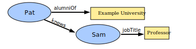
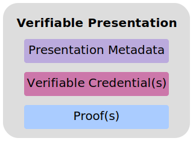

Credentials are a part of our daily lives; driver's licenses are used to
assert that we are capable of operating a motor vehicle, university degrees
can be used to assert our level of education, and government-issued passports
enable us to travel between countries. This specification provides a mechanism
to express these sorts of credentials on the Web in a way that is
cryptographically secure, privacy respecting, and machine-verifiable.
Status of This Document
This section describes the status of this
document at the time of its publication. A list of current W3C
publications and the latest revision of this technical report can be found
in the W3C technical reports index at
https://www.w3.org/TR/.
The Working Group is actively seeking implementation feedback for this
specification. In order to exit the Candidate Recommendation phase, the
Working Group has set the requirement of at least two independent
implementations for each mandatory feature in the specification. Please see
the
implementation report for more details.
Comments regarding this specification are welcome at any time.
Please file issues directly on
GitHub,
or, if that is not possible, send them to
public-vc-comments@w3.org
(subscribe,
archives).
Publication as a Candidate Recommendation does not
imply endorsement by W3C and its Members. A Candidate Recommendation Snapshot has received
wide review, is intended to
gather
implementation experience,
and has commitments from Working Group members to
royalty-free licensing
for implementations.
This Candidate Recommendation is not expected to advance to Proposed
Recommendation any earlier than 31 March 2024.
This document was produced by a group
operating under the
W3C Patent
Policy.
W3C maintains a
public list of any patent disclosures
made in connection with the deliverables of
the group; that page also includes
instructions for disclosing a patent. An individual who has actual
knowledge of a patent which the individual believes contains
Essential Claim(s)
must disclose the information in accordance with
section 6 of the W3C Patent Policy.
Credentials are a part of our daily lives; driver's licenses are used to
assert that we are capable of operating a motor vehicle, university degrees
can be used to assert our level of education, and government-issued passports
enable us to travel between countries. These credentials provide
benefits to us when used in the physical world, but their use on the Web
continues to be elusive.
Currently it is difficult to express education qualifications, healthcare
data, financial account details, and other sorts of third-party verified
machine-readable personal information on the Web. The difficulty of expressing
digital credentials on the Web makes it challenging to receive the same
benefits through the Web that physical credentials provide us in the
physical world.
This specification provides a standard way to express credentials on the
Web in a way that is cryptographically secure, privacy respecting, and
machine-verifiable.
For those unfamiliar with the concepts related to
verifiable credentials, the following sections provide an overview of:
The use cases and requirements that informed this specification.
1.1 What is a Verifiable Credential?
This section is non-normative.
In the physical world, a credential might consist of:
Information related to identifying the subject of the credential
(for example, a photo, name, or identification number)
Information related to the issuing authority (for example, a city government,
national agency, or certification body)
Information related to the type of credential this is (for example, a
Dutch passport, an American driving license, or a health insurance card)
Information related to specific attributes or properties being asserted by
the issuing authority about the subject (for example, nationality,
the classes of vehicle entitled to drive, or date of birth)
Evidence related to how the credential was derived
Information related to constraints on the credential (for example,
validity period, or terms of use).
A verifiable credential can represent all of the same information that a
physical credential represents. The addition of technologies, such as
digital signatures, makes verifiable credentials more tamper-evident and
more trustworthy than their physical counterparts.
Both verifiable credentials and verifiable presentations can be
transmitted rapidly, making them more convenient than their physical
counterparts when trying to establish trust at a distance.
While this specification attempts to improve the ease of expressing digital
credentials, it also attempts to balance this goal with a number of
privacy-preserving goals. The persistence of digital information, and the ease
with which disparate sources of digital data can be collected and correlated,
comprise a privacy concern that the use of verifiable and easily
machine-readable credentials threatens to make worse. This document
outlines and attempts to address a number of these issues in Section
8. Privacy Considerations. Examples of how to use this data model
using privacy-enhancing technologies, such as zero-knowledge proofs, are also
provided throughout this document.
The word "verifiable" in the terms
verifiable credential and verifiable presentation
refers to the characteristic of a credential or presentation
as being able to be verified by a verifier,
as defined in this document. Verifiability of a credential does not imply
the truth of claims encoded therein. Rather, once the authenticity and
currency of a verifiable credential or verifiable presentation are
established, a verifier validates the included claims using their own
business rules before relying on them. Such reliance only occurs after
evaluating the issuer, the proof, the subject, and the claims, against one or
more verifier policies.
1.2 Ecosystem Overview
This section is non-normative.
This section describes the roles of the core actors and the relationships
between them in an ecosystem where verifiable credentials are expected
to be useful. A role is an abstraction that might be implemented in many
different ways. The separation of roles suggests likely interfaces and
protocols for standardization. The following roles are introduced in this
specification:
A role an entity performs by receiving one or more
verifiable credentials, optionally inside a
verifiable presentation, for processing. Example verifiers include
employers, security personnel, and websites.
A role a system might perform by mediating the creation and verification
of identifiers, keys, and other relevant data, such as
verifiable credential schemas, revocation registries, issuer public keys,
and so on, which might be required to use verifiable credentials. Some
configurations might require correlatable identifiers for subjects.
Example verifiable data registries include trusted databases, decentralized
databases, government ID databases, and distributed ledgers. Often
there is more than one type of verifiable data registry utilized in an
ecosystem.
Figure 1
The roles and information flows forming the basis for this specification.
Note
Figure 1 above provides an example ecosystem in which to ground the
rest of the concepts in this specification. Other ecosystems exist, such as
protected environments or proprietary systems, where
verifiable credentials also provide benefit.
1.3 Use Cases and Requirements
This section is non-normative.
The Verifiable Credentials Use Cases document [VC-USE-CASES] outlines a number
of key topics that readers might find useful, including:
A more thorough explanation of the
roles
introduced above
The
needs
identified in market verticals, such as education, finance, healthcare, retail,
professional licensing, and government
Common
tasks
performed by the roles in the ecosystem, as well as their associated
requirements
As a result of documenting and analyzing the use cases document, the following
desirable ecosystem characteristics were identified for this specification:
Verifiable credentials represent statements made by an issuer in
a tamper-evident and privacy-respecting manner.
The specification must provide a means for issuers to issue
verifiable credentials that support selective disclosure, without
requiring all conformant software to support that feature.
The processes of cryptographically protecting and verifying
verifiable credentials and verifiable presentations have to be
deterministic, bi-directional, and lossless. Any
verifiable credential or verifiable presentation has to be
transformable to the JSON-LD data model defined in this document via a
deterministic process so that its verification can be processed in an
interoperable fashion.
Verifiable credentials and verifiable presentations have to be
serializable in one or more machine-readable data formats. The process of
serialization and/or de-serialization has to be deterministic, bi-directional,
and lossless. Any serialization of a verifiable credential or
verifiable presentation needs to be transformable to the generic data
model defined in this document in a deterministic process such that the
resulting verifiable credential can be processed in an interoperable
fashion. The serialized form also needs to be able to be generated from the data
model without loss of data or content.
The data model and serialization must be extendable with minimal coordination.
Issuers revoking verifiable credentials should distinguish between
revocation for cryptographic integrity (for example, the signing key is
compromised) versus revocation for a status change (for example, the driver's
license is suspended).
As well as sections marked as non-normative, all authoring guidelines, diagrams, examples, and notes in this specification are non-normative. Everything else in this specification is normative.
The key words MAY, MUST, MUST NOT, OPTIONAL, RECOMMENDED, REQUIRED, SHOULD, and SHOULD NOT in this document
are to be interpreted as described in
BCP 14
[RFC2119] [RFC8174]
when, and only when, they appear in all capitals, as shown here.
A conforming document is a
compacted JSON-LD
document that complies with all of the relevant "MUST" statements in this
specification. Specifically, the relevant normative "MUST" statements in
Sections 4. Basic Concepts, 5. Advanced Concepts, and
6. Syntaxes of this document MUST be enforced.
A conforming document is either a verifiable credential that MUST be
serialized using the application/vc+ld+json media type or a
verifiable presentation that MUST be serialized using the
application/vp+ld+json media type. A conforming document MUST be
secured by at least one securing mechanism as described in Section
4.9 Securing Mechanisms.
This document also contains examples that contain characters that are invalid
JSON, such as inline comments (//) and the use of ellipsis
(...) to denote information that adds little value to the example.
Implementers are cautioned to remove this content if they desire to use the
information as a valid document.
2. Terminology
The following terms are used to describe concepts in this specification.
The act of limiting the amount of shared data strictly to the minimum
necessary to successfully accomplish a task or goal.
decentralized identifier
A portable URL-based identifier, also known as a DID,
associated with an entity. These identifiers are most often used in a
verifiable credential and are associated with subjects such that a
verifiable credential itself can be easily ported from one
repository to another without the need to reissue the credential.
An example of a DID is did:example:123456abcdef.
A verifiable, boolean assertion about the value of another attribute in a
verifiable credential. These are useful in zero-knowledge-proof-style
verifiable presentations because they can limit information disclosure.
For example, if a verifiable credential contains an attribute
for expressing a specific height in centimeters, a derived predicate
might reference the height attribute in the verifiable credential
demonstrating that the issuer attests to a height value meeting the
minimum height requirement, without actually disclosing the specific height
value. For example, the subject is taller than 150 centimeters.
entity
Anything that can be referenced in statements as an abstract or concrete noun.
Entities include but are not limited to people, organizations, physical things,
documents, abstract concepts, fictional characters, and arbitrary text. Any
entity might perform roles in the ecosystem, if it is capable of doing so. Note
that some entities fundamentally cannot take actions, e.g., the string "abc"
cannot issue credentials.
graph
A set of claims, forming a network of information composed of subjects
and their relationship to other subjects or data. Each claim is
part of a graph; this is either explicit in the case of named graphs, or
implicit for the default graph.
An identity provider, sometimes abbreviated as IdP, is a system
for creating, maintaining, and managing identity information for
holders, while providing authentication services to
relying party applications within a federation or distributed network.
In this case the holder is always the subject. Even if the
verifiable credentials are bearer credentials, it is assumed the
verifiable credentials remain with the subject, and if they are
not, they were stolen by an attacker. This specification does not use this term
unless comparing or mapping the concepts in this document to other
specifications. This specification decouples the identity provider
concept into two distinct concepts: the issuer and the holder.
A graph associated with specific properties, such as
verifiableCredential or proof. These properties
result in separate graphs that contain all claims defined in the
corresponding JSON objects.
The assurance that a claim from a specific issuer satisfies the
business requirements of a verifier for a particular use. This
specification defines how verifiers verify verifiable credentials and
verifiable presentations.
It also specifies that verifiers validate claims in verifiable
credentials before relying on them. However, the means for such validation
vary widely and are outside the scope of this specification. It is expected
that verifiers will trust certain issuers for certain claims and
apply their own rules to determine which claims in which credentials
are suitable for use by their systems.
verifiable credential
A verifiable credential is a tamper-evident credential that has authorship that
can be cryptographically verified. Verifiable credentials can be used to build
verifiable presentations, which can also be cryptographically verified.
verifiable data registry
A role a system might perform by mediating the creation and verification
of identifiers, keys, and other relevant data, such as
verifiable credential schemas, revocation registries, issuer public keys,
and so on, which might be required to use verifiable credentials. Some
configurations might require correlatable identifiers for subjects. Some
registries, such as ones for UUIDs and public keys, might just act as namespaces
for identifiers.
verifiable presentation
A verifiable presentation is a tamper-evident presentation encoded in such a way
that authorship of the data can be trusted after a process of cryptographic
verification. Certain types of verifiable presentations might contain data that
is synthesized from, but do not contain, the original verifiable credentials
(for example, zero-knowledge proofs).
verification
The evaluation of whether a verifiable credential or verifiable
presentation is an authentic and current statement of the issuer or
presenter, respectively. This includes checking that: the credential (or
presentation) conforms to the specification; the proof method is satisfied; and,
if present, the status check succeeds. Verification of a credential does not
imply evaluation of the truth of claims encoded in the credential.
A Uniform Resource Locator, as defined by [URL]. URLs can be dereferenced such
that they result in a resource, such as a document. The rules for dereferencing,
or fetching, a URL are defined by the URL scheme. This specification
does not use the term URI or IRI because those terms have been deemed to be
confusing to Web developers.
A claim is a statement about a subject. A subject is a
thing about which claims can be made. Claims are expressed using
subject-
property-value relationships.
The data model for claims, illustrated in Figure 2
above, is powerful and can be used to express a large variety of statements. For
example, whether someone graduated from a particular university can be expressed
as shown in Figure 3 below.
Figure 3
A basic claim expressing that Pat is an alumni of "Example University".
Individual claims can be merged together to express a graph of
information about a subject. The example shown in
Figure 4 below extends the previous claim by
adding the claims that Pat knows Sam and that Sam is employed as a
professor.

Figure 4
Multiple claims can be combined to express a graph of information.
To this point, the concepts of a claim and a graph of information
are introduced. To be able to trust claims, more information is
expected to be added to the graph.
3.2 Credentials
This section is non-normative.
A credential is a set of one or more claims made by the same
entity. Credentials might also include an identifier and metadata
to describe properties of the credential, such as the
issuer, the validity date and time period, a representative image, a
public key to use for verification purposes, the revocation mechanism,
and so on. The metadata might be signed by the issuer. A
verifiable credential is a set of tamper-evident claims and
metadata that cryptographically prove who issued it.
Figure 5
Basic components of a verifiable credential.
Examples of verifiable credentials include digital employee
identification cards, digital birth certificates, and digital educational
certificates.
Note
Credential identifiers are often used to identify specific instances
of a credential. These identifiers can also be used for correlation. A
holder wanting to minimize correlation is advised to use a selective
disclosure scheme that does not reveal the credential identifier.
Figure 6
Information graphs associated with a basic verifiable credential.
Note
It is possible to have a credential, such as a marriage certificate,
containing multiple claims about different subjects that are not
required to be related.
Note
It is possible to have a credential that does not contain any
claims about the entity to which the credential was issued.
For example, a credential that only contains claims about a
specific dog, but is issued to its owner.
3.3 Presentations
This section is non-normative.
Enhancing privacy is a key design feature of this specification. Therefore, it
is important for entities using this technology to be able to express
only the portions of their persona that are appropriate for a given situation.
The expression of a subset of one's persona is called a
verifiable presentation. Examples of different personas include a
person's professional persona, their online gaming persona, their
family persona, or an incognito persona.
The data in a presentation is often about the same subject, but
might have been issued by multiple issuers. The aggregation of this
information typically expresses an aspect of a person, organization, or
entity.

Figure 7
Basic components of a verifiable presentation.
Figure 8
Information graphs associated with a basic verifiable presentation.
Note
It is possible to have a presentation, such as a business persona, which
draws on multiple credentials about different subjects that are
often, but not required to be, related.
To illustrate this lifecycle, we will use the example of redeeming an alumni
discount from a university. In the example below, Pat receives an alumni
verifiable credential from a university, and Pat stores the
verifiable credential in a digital wallet.
Example 1: A simple example of the contents of a verifiable credential
{
// set the context, which establishes the special terms we will be using
// such as 'issuer' and 'alumniOf'.
"@context": [
"https://www.w3.org/ns/credentials/v2",
"https://www.w3.org/ns/credentials/examples/v2"
],
// specify the identifier for the credential
"id": "http://university.example/credentials/1872",
// the credential types, which declare what data to expect in the credential
"type": ["VerifiableCredential", "ExampleAlumniCredential"],
// the entity that issued the credential
"issuer": "https://university.example/issuers/565049",
// when the credential was issued
"validFrom": "2010-01-01T19:23:24Z",
// claims about the subjects of the credential
"credentialSubject": {
// identifier for the only subject of the credential
"id": "did:example:ebfeb1f712ebc6f1c276e12ec21",
// assertion about the only subject of the credential
"alumniOf": {
// identifier for the university
"id": "did:example:c276e12ec21ebfeb1f712ebc6f1",
// name of the university
"name": "Example University"
}
}
}
Pat then attempts to redeem the alumni discount. The verifier, a ticket
sales system, states that alumni of "Example University" receive a discount
on season tickets to sporting events. Using a mobile device, Pat starts the
process of purchasing a season ticket. A step in this process requests an alumni
verifiable credential, and this request is routed to Pat's digital wallet.
The digital wallet asks Pat if they would like to provide a previously issued
verifiable credential. Pat selects the alumni
verifiable credential, which is then composed into a
verifiable presentation. The verifiable presentation is sent to
the verifier and verified.
Once verified as authentic and current, the seller of the season ticket then
validates that the issuer of the verifiable credential is recognized for
the claim of alumni status — it is, as it was issued by Example
University — and that today's date lies within the validity period defined
by the values of the validFrom and validUntil properties. Since the holder is
expected to be the subject of the verifiable credential, the
verifier also confirms that the id for the alumni claim matches the id of
the creator of the verifiable presentation.
Having verified the credential and the presentation, and validated the
relevant claims, the ticket seller safely enables the alumni discount for Pat,
confident that Pat is legitimately entitled to it.
Example 2: A simple example of a verifiable presentation
This section introduces some basic concepts for the specification, in
preparation for Section 5. Advanced Concepts later in the
document.
4.1 Getting Started
This section is non-normative.
This specification is designed to ease the prototyping of new types of
verifiable credentials. Developers can copy the
template below and paste it into common verifiable credential
tooling to start issuing, holding, and verifying prototype credentials.
It is expected that a developer will change MyPrototypeCredential below to
the type of credential they would like to create. Since
verifiable credentials talk about subjects, each property-value pair in
the credentialSubject object expresses a particular attribute of the
credential subject. Once a developer has added a number of these property-value
combinations, the modified object can be sent to verifiable credential
issuer software and a verifiable credential will be created for the
developer. From a prototyping standpoint, that is all a developer needs to do.
Example 3: A template for creating prototype verifiable credentials
Once a developer has prototyped their credential to a point where they believe
all of the credential properties are stable, it is advised that they generate
vocabulary and context files for their application and publish them at stable URLs
so that other developers can use the same vocabulary and context to achieve
interoperability. This process is covered in Section
5.3 Extensibility. Alternatively, developers can reuse existing vocabulary
and context files that happen to fit their use case. They can explore the
Verifiable Credentials Specifications Directory [VC-SPECS] for reusable resources.
4.2 Contexts
When two software systems need to exchange data, they need to use terminology
that both systems understand. As an analogy, consider how two people
communicate. Both people must use the same language and the words they use must
mean the same thing to each other. This might be referred to as
the context of a conversation.
In JSON-LD, the @contextproperty can also be used to
communicate other details, such as datatype information, language information,
transformation rules, and so on, which are beyond the needs of this
specification, but might be useful in the future or to related work. For more
information, see
Section 3.1: The Context
of the JSON-LD 1.1 [JSON-LD11] specification.
The value of the @contextpropertyMUST be an ordered set
where the first item is a URL with the value
https://www.w3.org/ns/credentials/v2. For reference, a copy of
the base context is provided in Appendix B.1 Base Context.
Subsequent items in the array MUST be composed of any combination of
URLs and/or objects where each is processable as a
JSON-LD Context.
Note
This specification requires for a @contextproperty
to be present; this property is defined by [JSON-LD11].
The example above uses the base context URL
(https://www.w3.org/ns/credentials/v2) to establish that the
conversation is about a verifiable credential. The second URL
(https://www.w3.org/ns/credentials/examples/v2) establishes that
the conversation is about examples.
Note
This document uses the example context URL
(https://www.w3.org/ns/credentials/examples/v2) for the purpose
of demonstrating examples. Implementations are expected to not use this
URL for any other purpose, such as in pilot or production systems.
The data available at https://www.w3.org/ns/credentials/v2 is a
static document that is never updated and SHOULD be downloaded and cached. The
associated human-readable vocabulary document for the Verifiable Credentials
Data Model is available at
https://www.w3.org/2018/credentials/.
This concept is further expanded on in Section 5.3 Extensibility.
4.3 Identifiers
When expressing statements about a specific thing, such as a person, product, or
organization, it can be useful to use a globally unique identifier for that thing.
Globally unique identifiers enable others to express statements
about the same thing. This specification defines the optional idproperty for such identifiers. The idproperty
allows for the expression of statements about specific things in the
verifiable credential and is set by an issuer when expressing
objects in a verifiable credential or a holder when expressing
objects in a verifiable presentation. Example id values
include UUIDs (urn:uuid:0c07c1ce-57cb-41af-bef2-1b932b986873), HTTP URLs
(https://id.example/things#123), and DIDs (did:example:1234abcd).
The idpropertyMUST express an identifier that others are
expected to use when expressing statements about a specific thing identified
by that identifier.
The value of the idpropertyMUST be a URL which
MAY be dereferenced.
Note
Developers should remember that identifiers might be harmful in scenarios
where pseudonymity is required. Developers are encouraged to read Section
8.4 Identifier-Based Correlation carefully when considering such
scenarios. There are also other types of correlation mechanisms documented in
Section 8. Privacy Considerations that create privacy concerns.
Where privacy is a strong consideration, the idpropertyMAY be omitted. Some use cases do not require, or explicitly require omitting,
the idproperty.
id
The value of the idpropertyMUST be a single URL.
It is RECOMMENDED that the URL in the id be one which, if
dereferenced, results in a document containing machine-readable information
about the id.
As of this publication, DIDs are a new type of identifier that are not
necessary for verifiable credentials to be useful. Specifically,
verifiable credentials do not depend on DIDs and DIDs do
not depend on verifiable credentials. However, it is expected that many
verifiable credentials will use DIDs and that software libraries
implementing this specification will probably need to resolve DIDs.
DID-based URLs are used for expressing identifiers associated with
subjects, issuers, holders, credential status lists,
cryptographic keys, and other machine-readable information associated with a
verifiable credential.
4.4 Types
Software systems that process the kinds of objects specified in this document
use type information to determine whether or not a provided
verifiable credential or verifiable presentation is appropriate
for the intended use case. This specification defines a typeproperty for the expression of type information. This type information
can be used during validation processes as described in Appendix
8.12 Validation.
The value of the typepropertyMUST be, or map to (through
interpretation of the @context property), one or more URLs.
If more than one URL is provided, the URLsMUST be interpreted
as an unordered set. Syntactic conveniences SHOULD be used to ease developer
usage. Such conveniences might include JSON-LD terms. It is RECOMMENDED that
each URL in the type be one which, if dereferenced, results
in a document containing machine-readable information about the
type.
VerifiableCredential and, optionally, a more specific
verifiable credentialtype. For example, "type": ["VerifiableCredential", "ExampleDegreeCredential"]
VerifiablePresentation and, optionally, a more specific
verifiable presentationtype. For example, "type": ["VerifiablePresentation", "ExamplePresentation"]
A valid evidence type. For example, "type": "ExampleEvidence"
Note
The type system for the Verifiable Credentials Data Model is the same as
for [JSON-LD11] and is detailed in
Section 3.5:
Specifying the Type and
Section 9: JSON-LD
Grammar. When using a JSON-LD context (see Section
5.3 Extensibility), this specification aliases the
@type keyword to type to make the JSON-LD documents
more easily understood. While application developers and document authors do
not need to understand the specifics of the JSON-LD type system, implementers
of this specification who want to support interoperable extensibility, do.
All credentials, presentations, and encapsulated objects SHOULD
specify, or be associated with, additional more narrow types (like
ExampleDegreeCredential, for example) so software systems can
more easily detect and process this additional information.
When processing encapsulated objects defined in this specification, (for
example, objects associated with the credentialSubject object or
deeply nested therein), software systems SHOULD use the type information
specified in encapsulating objects higher in the hierarchy. Specifically, an
encapsulating object, such as a credential, SHOULD convey the associated
object types so that verifiers can quickly determine the contents
of an associated object based on the encapsulating object type.
For example, a credential object with the type of
ExampleDegreeCredential, signals to a verifier that the
object associated with the credentialSubject property contains the
identifier for the:
This enables implementers to rely on values associated with the
type property for verification purposes. The expectation of
types and their associated properties should be documented in at least a
human-readable specification, and preferably, in an additional machine-readable
representation.
Note
The type system used in the data model described in this specification allows
for multiple ways to associate types with data. Implementers and authors are
urged to read the section on typing in the Verifiable Credentials
Implementation Guidelines [VC-IMP-GUIDE].
4.5 Names and Descriptions
When displaying a credential, it can be useful to have
text provided by the issuer that furnishes the
credential with a name as well as a short description of its
purpose. The name and descriptionproperties
are meant to serve these purposes.
name
An OPTIONAL property that expresses the name of the credential. If
present, the value of the namepropertyMUST be a string or
a language value object as described in
11.1 Language and Base Direction. Ideally, the name of a
credential is concise, human-readable, and could enable an individual to
quickly differentiate one credential from any other credentials
that they might hold.
description
An OPTIONAL property that conveys specific details about a credential. If
present, the value of the descriptionpropertyMUST be a
string or a language value object as described in
11.1 Language and Base Direction. Ideally, the description of a
credential is no more than a few sentences in length and conveys enough
information about the credential to remind an individual of its contents
without their having to look through the entirety of the claims.
Example 7: Usage of the name and description property
Verifiable CredentialSecured with Data IntegritySecured with VC-JWT
{
"@context": [
"https://www.w3.org/ns/credentials/v2",
"https://www.w3.org/ns/credentials/examples/v2"
],
"id": "http://university.example/credentials/3732",
"type": ["VerifiableCredential", "ExampleDegreeCredential"],
"issuer": {
"id": "https://university.example/issuers/565049",
"name": "Example University",
"description": "A public university focusing on teaching examples."
},
"validFrom": "2015-05-10T12:30:00Z",
"name": "Example University Degree",
"description": "2015 Bachelor of Science and Arts Degree",
"credentialSubject": {
"id": "did:example:ebfeb1f712ebc6f1c276e12ec21",
"degree": {
"type": "ExampleBachelorDegree",
"name": "Bachelor of Science and Arts"
}
}
}
{ "@context": [ "https://www.w3.org/ns/credentials/v2", "https://www.w3.org/ns/credentials/examples/v2", "https://w3id.org/security/suites/ed25519-2020/v1" ], "id": "http://university.example/credentials/3732", "type": [ "VerifiableCredential", "ExampleDegreeCredential" ], "issuer": { "id": "https://university.example/issuers/565049", "name": "Example University", "description": "A public university focusing on teaching examples." }, "validFrom": "2015-05-10T12:30:00Z", "name": "Example University Degree", "description": "2015 Bachelor of Science and Arts Degree", "credentialSubject": { "id": "did:example:ebfeb1f712ebc6f1c276e12ec21", "degree": { "type": "ExampleBachelorDegree", "name": "Bachelor of Science and Arts" } }, "proof": { "type": "Ed25519Signature2020", "created": "2024-01-06T19:16:26Z", "verificationMethod": "https://university.example/issuers/565049#key-1" , "proofPurpose": "assertionMethod", "proofValue": "z3B8Gqndgp5f89Pisbhu5KKGgpkgz1iKuakty6MoBahjfwo4PRuxnxyZ LxzY2zQibRaerkdAvQDVFDfewsvLGvRnP" } }
---------------- JWT header --------------- { "alg": "ES256", "typ": "JWT" } --------------- JWT payload --------------- // NOTE: The example below uses a valid VC-JWT serialization // that duplicates the iss, nbf, jti, and sub fields in the // Verifiable Credential (vc) field. { "vc": { "@context": [ "https://www.w3.org/ns/credentials/v2", "https://www.w3.org/ns/credentials/examples/v2" ], "id": "http://university.example/credentials/3732", "type": [ "VerifiableCredential", "ExampleDegreeCredential" ], "issuer": { "id": "https://university.example/issuers/565049", "name": "Example University", "description": "A public university focusing on teaching examples." }, "validFrom": "2015-05-10T12:30:00Z", "name": "Example University Degree", "description": "2015 Bachelor of Science and Arts Degree", "credentialSubject": { "id": "did:example:ebfeb1f712ebc6f1c276e12ec21", "degree": { "type": "ExampleBachelorDegree", "name": "Bachelor of Science and Arts" } } }, "iss": { "id": "https://university.example/issuers/565049", "name": "Example University", "description": "A public university focusing on teaching examples." }, "jti": "http://university.example/credentials/3732", "sub": "did:example:ebfeb1f712ebc6f1c276e12ec21" } --------------- JWT --------------- eyJhbGciOiJFUzI1NiIsInR5cCI6IkpXVCJ9.eyJ2YyI6eyJAY29udGV4dCI6WyJodHRwczovL3 d3dy53My5vcmcvbnMvY3JlZGVudGlhbHMvdjIiLCJodHRwczovL3d3dy53My5vcmcvbnMvY3JlZ GVudGlhbHMvZXhhbXBsZXMvdjIiXSwiaWQiOiJodHRwOi8vdW5pdmVyc2l0eS5leGFtcGxlL2Ny ZWRlbnRpYWxzLzM3MzIiLCJ0eXBlIjpbIlZlcmlmaWFibGVDcmVkZW50aWFsIiwiRXhhbXBsZUR lZ3JlZUNyZWRlbnRpYWwiXSwiaXNzdWVyIjp7ImlkIjoiaHR0cHM6Ly91bml2ZXJzaXR5LmV4YW 1wbGUvaXNzdWVycy81NjUwNDkiLCJuYW1lIjoiRXhhbXBsZSBVbml2ZXJzaXR5IiwiZGVzY3Jpc HRpb24iOiJBIHB1YmxpYyB1bml2ZXJzaXR5IGZvY3VzaW5nIG9uIHRlYWNoaW5nIGV4YW1wbGVz LiJ9LCJ2YWxpZEZyb20iOiIyMDE1LTA1LTEwVDEyOjMwOjAwWiIsIm5hbWUiOiJFeGFtcGxlIFV uaXZlcnNpdHkgRGVncmVlIiwiZGVzY3JpcHRpb24iOiIyMDE1IEJhY2hlbG9yIG9mIFNjaWVuY2 UgYW5kIEFydHMgRGVncmVlIiwiY3JlZGVudGlhbFN1YmplY3QiOnsiaWQiOiJkaWQ6ZXhhbXBsZ TplYmZlYjFmNzEyZWJjNmYxYzI3NmUxMmVjMjEiLCJkZWdyZWUiOnsidHlwZSI6IkV4YW1wbGVC YWNoZWxvckRlZ3JlZSIsIm5hbWUiOiJCYWNoZWxvciBvZiBTY2llbmNlIGFuZCBBcnRzIn19fSw iaXNzIjp7ImlkIjoiaHR0cHM6Ly91bml2ZXJzaXR5LmV4YW1wbGUvaXNzdWVycy81NjUwNDkiLC JuYW1lIjoiRXhhbXBsZSBVbml2ZXJzaXR5IiwiZGVzY3JpcHRpb24iOiJBIHB1YmxpYyB1bml2Z XJzaXR5IGZvY3VzaW5nIG9uIHRlYWNoaW5nIGV4YW1wbGVzLiJ9LCJqdGkiOiJodHRwOi8vdW5p dmVyc2l0eS5leGFtcGxlL2NyZWRlbnRpYWxzLzM3MzIiLCJzdWIiOiJkaWQ6ZXhhbXBsZTplYmZ lYjFmNzEyZWJjNmYxYzI3NmUxMmVjMjEifQ.lS1uoCiM_mFwcOlofj1ZQxHDPtHQiVM6Vt9NmyM MeJQMWW-pxZ-FleXIRFuB-xh90qFHrBF6XCx6OKj82EMpkA
Names and descriptions also support expressing content in different languages.
To express a string with language and base direction information,
one can use an object that contains the @value, @language, and @direction
properties to express the text value, language tag, and base direction,
respectively. See
11.1 Language and Base Direction for further information.
Example 8: Usage of the name and description property
{
"@context": [
"https://www.w3.org/ns/credentials/v2",
"https://www.w3.org/ns/credentials/examples/v2"
],
"id": "http://university.example/credentials/3732",
"type": ["VerifiableCredential", "ExampleDegreeCredential"],
"issuer": {
"id": "https://university.example/issuers/565049",
"name": [{
"@value": "Example University",
"@language": "en"
}, {
"@value": "Université de Exemple",
"@language": "fr"
}, {
"@value": "جامعة المثال",
"@language": "ar",
"@direction": "rtl"
}],
"description": [{
"@value": "A public university focusing on teaching examples.",
"@language": "en"
}, {
"@value": "Une université publique axée sur l'enseignement des exemples.",
"@language": "fr"
}, {
"@value": "جامعة عامة تركز على أمثلة التدريس.",
"@language": "ar",
"@direction": "rtl"
}]
},
"validFrom": "2015-05-10T12:30:00Z",
"name": [{
"@value": "Example University Degree",
"@language": "en"
}, {
"@value": "Exemple de Diplôme Universitaire",
"@language": "fr"
}, {
"@value": "مثال الشهادة الجامعية",
"@language": "ar",
"@direction": "rtl"
}],
"description": [{
"@value": "2015 Bachelor of Science and Arts Degree",
"@language": "en"
}, {
"@value": "2015 Baccalauréat Scientifique et Arts",
"@language": "fr"
}, {
"@value": "2015 بكالوريوس العلوم والآداب",
"@language": "ar",
"@direction": "rtl"
}],
"credentialSubject": {
"id": "did:example:ebfeb1f712ebc6f1c276e12ec21",
"degree": {
"type": "ExampleBachelorDegree",
"name": [{
"@value": "Bachelor of Science and Arts Degree",
"@language": "en"
}, {
"@value": "Baccalauréat Scientifique et Arts",
"@language": "fr"
}, {
"@value": "بكالوريوس العلوم والآداب",
"@language": "ar",
"@direction": "rtl"
}]
}
}
}
The value of the credentialSubjectproperty is defined as a
set of objects where each object MUST be the subject of one or more claims,
which MUST be serialized inside the credentialSubjectproperty.
Each object MAY
also contain an id to identify the subject, as
described in Section 4.3 Identifiers.
Example 9: Usage of the credentialSubject property
Verifiable CredentialSecured with Data IntegritySecured with VC-JWT
---------------- JWT header --------------- { "alg": "ES256", "typ": "JWT" } --------------- JWT payload --------------- // NOTE: The example below uses a valid VC-JWT serialization // that duplicates the iss, nbf, jti, and sub fields in the // Verifiable Credential (vc) field. { "vc": { "@context": [ "https://www.w3.org/ns/credentials/v2", "https://www.w3.org/ns/credentials/examples/v2" ], "id": "http://university.example/credentials/3732", "type": [ "VerifiableCredential", "ExampleDegreeCredential" ], "issuer": "https://university.example/issuers/565049", "validFrom": "2010-01-01T00:00:00Z", "credentialSubject": { "id": "did:example:ebfeb1f712ebc6f1c276e12ec21", "degree": { "type": "ExampleBachelorDegree", "name": "Bachelor of Science and Arts" } } }, "iss": "https://university.example/issuers/565049", "jti": "http://university.example/credentials/3732", "sub": "did:example:ebfeb1f712ebc6f1c276e12ec21" } --------------- JWT --------------- eyJhbGciOiJFUzI1NiIsInR5cCI6IkpXVCJ9.eyJ2YyI6eyJAY29udGV4dCI6WyJodHRwczovL3 d3dy53My5vcmcvbnMvY3JlZGVudGlhbHMvdjIiLCJodHRwczovL3d3dy53My5vcmcvbnMvY3JlZ GVudGlhbHMvZXhhbXBsZXMvdjIiXSwiaWQiOiJodHRwOi8vdW5pdmVyc2l0eS5leGFtcGxlL2Ny ZWRlbnRpYWxzLzM3MzIiLCJ0eXBlIjpbIlZlcmlmaWFibGVDcmVkZW50aWFsIiwiRXhhbXBsZUR lZ3JlZUNyZWRlbnRpYWwiXSwiaXNzdWVyIjoiaHR0cHM6Ly91bml2ZXJzaXR5LmV4YW1wbGUvaX NzdWVycy81NjUwNDkiLCJ2YWxpZEZyb20iOiIyMDEwLTAxLTAxVDAwOjAwOjAwWiIsImNyZWRlb nRpYWxTdWJqZWN0Ijp7ImlkIjoiZGlkOmV4YW1wbGU6ZWJmZWIxZjcxMmViYzZmMWMyNzZlMTJl YzIxIiwiZGVncmVlIjp7InR5cGUiOiJFeGFtcGxlQmFjaGVsb3JEZWdyZWUiLCJuYW1lIjoiQmF jaGVsb3Igb2YgU2NpZW5jZSBhbmQgQXJ0cyJ9fX0sImlzcyI6Imh0dHBzOi8vdW5pdmVyc2l0eS 5leGFtcGxlL2lzc3VlcnMvNTY1MDQ5IiwianRpIjoiaHR0cDovL3VuaXZlcnNpdHkuZXhhbXBsZ S9jcmVkZW50aWFscy8zNzMyIiwic3ViIjoiZGlkOmV4YW1wbGU6ZWJmZWIxZjcxMmViYzZmMWMy NzZlMTJlYzIxIn0.x3d27IE_axqrTnlQriEZUWICCfNPE5lf0iHHhZj1Pe8HXIajaUb6VoOL9xO hVrdnBiKq1PjfIHtcvuql2v8iIw
It is possible to express information related to multiple subjects in a
verifiable credential. The example below specifies two subjects
who are spouses. Note the use of array notation to associate multiple
subjects with the credentialSubject property.
Example 10: Specifying multiple subjects in a verifiable credential
The value of the issuerpropertyMUST be either a
URL, or an object containing an idproperty
whose value is a URL; in either case, the issuer selects this
URL to identify itself in a globally unambiguous
way. It is RECOMMENDED that the URL be one which, if dereferenced,
results in a controller document, as defined in [VC-DATA-INTEGRITY] or
[VC-JOSE-COSE], about the issuer that can be used to verify the
information expressed in the credential.
The value of the issuerproperty can also be a JWK (for
example, "https://example.com/keys/foo.jwk") or a DID (for
example, "did:example:abfe13f712120431c276e12ecab").
4.8 Validity Period
This specification defines the validFromproperty to help an
issuer to express the date and time when a credential becomes valid and
the validUntilproperty for expressing the date and time
when a credential ceases to be valid.
When comparing dates and times, the calculation is done "temporally", which
means that the string value is converted to a "temporal value" which exists
as a point on a timeline. Temporal comparisons are then performed by checking
to see where the date and time being compared is in relation to
a particular point on the timeline.
validFrom
If present, the value of the validFrompropertyMUST be an
[XMLSCHEMA11-2]
dateTimeStamp string value representing the date and time the
credential becomes valid, which could be a date and time in the future or
in the past. Note that this value represents the earliest point in time at which
the information associated with the credentialSubjectproperty becomes valid. If a validUntil value also exists, the
validFrom value MUST express a datetime that is temporally the same or earlier
than the datetime expressed by the validUntil value.
validUntil
If present, the value of the validUntilpropertyMUST be an
[XMLSCHEMA11-2]
dateTimeStamp string value representing the date and time the
credential ceases to be valid, which could be a date and time in the past
or in the future. Note that this value represents the latest point in time at
which the information associated with the credentialSubjectproperty is valid. If a validFrom value also exists, the validUntil
value MUST express a datetime that is temporally the same or later than the
datetime expressed by the validFrom value.
Example 13: Usage of validFrom and validUntil property
Verifiable CredentialSecured with Data IntegritySecured with VC-JWT
---------------- JWT header --------------- { "alg": "ES256", "typ": "JWT" } --------------- JWT payload --------------- // NOTE: The example below uses a valid VC-JWT serialization // that duplicates the iss, nbf, jti, and sub fields in the // Verifiable Credential (vc) field. { "vc": { "@context": [ "https://www.w3.org/ns/credentials/v2", "https://www.w3.org/ns/credentials/examples/v2" ], "id": "http://university.example/credentials/3732", "type": [ "VerifiableCredential", "ExampleDegreeCredential" ], "issuer": "https://university.example/issuers/14", "validFrom": "2010-01-01T19:23:24Z", "validUntil": "2020-01-01T19:23:24Z", "credentialSubject": { "id": "did:example:ebfeb1f712ebc6f1c276e12ec21", "degree": { "type": "ExampleBachelorDegree", "name": "Bachelor of Science and Arts" } } }, "iss": "https://university.example/issuers/14", "jti": "http://university.example/credentials/3732", "sub": "did:example:ebfeb1f712ebc6f1c276e12ec21" } --------------- JWT --------------- eyJhbGciOiJFUzI1NiIsInR5cCI6IkpXVCJ9.eyJ2YyI6eyJAY29udGV4dCI6WyJodHRwczovL3 d3dy53My5vcmcvbnMvY3JlZGVudGlhbHMvdjIiLCJodHRwczovL3d3dy53My5vcmcvbnMvY3JlZ GVudGlhbHMvZXhhbXBsZXMvdjIiXSwiaWQiOiJodHRwOi8vdW5pdmVyc2l0eS5leGFtcGxlL2Ny ZWRlbnRpYWxzLzM3MzIiLCJ0eXBlIjpbIlZlcmlmaWFibGVDcmVkZW50aWFsIiwiRXhhbXBsZUR lZ3JlZUNyZWRlbnRpYWwiXSwiaXNzdWVyIjoiaHR0cHM6Ly91bml2ZXJzaXR5LmV4YW1wbGUvaX NzdWVycy8xNCIsInZhbGlkRnJvbSI6IjIwMTAtMDEtMDFUMTk6MjM6MjRaIiwidmFsaWRVbnRpb CI6IjIwMjAtMDEtMDFUMTk6MjM6MjRaIiwiY3JlZGVudGlhbFN1YmplY3QiOnsiaWQiOiJkaWQ6 ZXhhbXBsZTplYmZlYjFmNzEyZWJjNmYxYzI3NmUxMmVjMjEiLCJkZWdyZWUiOnsidHlwZSI6IkV 4YW1wbGVCYWNoZWxvckRlZ3JlZSIsIm5hbWUiOiJCYWNoZWxvciBvZiBTY2llbmNlIGFuZCBBcn RzIn19fSwiaXNzIjoiaHR0cHM6Ly91bml2ZXJzaXR5LmV4YW1wbGUvaXNzdWVycy8xNCIsImp0a SI6Imh0dHA6Ly91bml2ZXJzaXR5LmV4YW1wbGUvY3JlZGVudGlhbHMvMzczMiIsInN1YiI6ImRp ZDpleGFtcGxlOmViZmViMWY3MTJlYmM2ZjFjMjc2ZTEyZWMyMSJ9.fOUDOhx1tYY1UtpCwngtLb 5B_e4sh_z7YEDiOoAwZVW_67gjqwx2AwHZRS3ji8ekvYG2BiKNTt7EX3aaoEi6Ew
Note
If validFrom and validUntil are not present, the
verifiable credential validity period is considered valid
indefinitely. In such cases, the verifiable credential is assumed to be
valid from the time the verifiable credential was created.
4.8.1 Representing Time
Implementers are urged to understand that representing and processing time
values is not as straight-forward as it might seem and have a variety of
idiosyncrasies that are not immediately obvious nor uniformly observed in
different regions of the world. For example:
Calendaring systems other than the Gregorian calendar are actively used by
various regions.
When processing Daylight Saving/Summer Time, it is important to understand that
1) it is not observed in all regions, 2) it does not necessarily begin or end on
the same day or at the same time of day, and 3) the amount or direction of the
adjustment does not always match other similar regions.
Leap seconds might not be taken into account in all software systems, especially
for dates and times that precede the introduction of the leap second. Leap
seconds can affects highly sensitive systems that depend on the exact
millisecond offset from the epoch. However, note that for most applications the
only moment in time that is affected is the one second period of the leap second
itself. That is, the moment after the most recent leap second can always be
represented as the first moment of the next day (for example,
2023-01-01T00:00:00Z), regardless of whether the system in question
understands leap seconds.
These are just a few examples that illustrate that the actual time of day, as
would be seen on a clock on the wall, can exist in one region but not exist in
another region. For this reason, implementers are urged to use time values
that are more universal, such as values anchored to the Z time zone over
values that are affected by Daylight Saving/Summer Time.
This specification attempts to increase the number of universally recognized
combinations of dates and times, and reduce the potential for
misinterpretation of time values, by utilizing the
dateTimeStamp construction first established by the [XMLSCHEMA11-2] specification. In
order to reduce misinterpretations between different time zones, all time values
expressed in conforming documentsSHOULD be specified in dateTimeStamp
format, either in Universal Coordinated Time (UTC), denoted by a Z at the end
of the value, or with a time zone offset relative to UTC. Time values that are
incorrectly serialized without an offset MUST be interpreted as UTC. Examples of
valid time zone offsets relative to UTC include Z, +01:00, -08:00, and
+14:00. See the regular expression at the end of this section for a formal
definition of all acceptable values.
Time zone definitions are occasionally changed by their governing body. When
replacing or issuing new verifiable credentials, implementers are advised
to ensure that changes to local time zone rules do not result in unexpected gaps
in validity. For example, consider the zone America/Los_Angeles, which has
a raw offset of UTC-8 and had voted to stop observing daylight savings time in
the year 2024. A given verifiable credential that had a validUtil
value of 2024-07-12T12:00:00-07:00, might be re-issued to have a
validFrom value of 2024-07-12T12:00:00-08:00, which would create a gap of
an hour where the verifiable credential would not be valid.
Implementers that desire to check dateTimeStamp values for validity
can use the regular expression provided below, which is reproduced from the [XMLSCHEMA11-2] specification for
convenience. To avoid doubt, the regular expression in [XMLSCHEMA11-2] is the
normative definition. Implementers are advised that not all
dateTimeStamp values that pass the regular expression below are
valid moments in time. For example, the regular expression below allows for 31
days in every month, which allows for leap years, and leap seconds, as well as
days in places where they do not exist. That said, modern system libraries that
generate dateTimeStamp values are often error-free in their
generation of valid dateTimeStamp values. The regular
expression shown below (minus the whitespace included here for readability),
is often adequate when processing library-generated dates and times on
modern systems.
Example 14: Regular expression to detect a valid XML Schema 1.1: Part 2 dateTimeStamp
An embedded proof is a mechanism where the proof is
included in the serialization of the data model. One such RECOMMENDED embedded
proof mechanism is defined in Verifiable Credential Data Integrity [VC-DATA-INTEGRITY].
These two classes of securing mechanisms are not mutually exclusive. Additional
securing mechanism specifications might also be defined according to the rules
in Section 5.13 Securing Mechanism Specifications.
Example 15: A verifiable credential utilizing an embedded proof
This specification defines the credentialStatusproperty for the
discovery of information about the status of a verifiable credential, such
as whether it is suspended or revoked.
The following properties are defined for object values associated with the
credentialStatusproperty:
id
The idproperty is OPTIONAL. It MAY be used to provide a
unique identifier for the credential status object. If present, the
normative guidance in Section 4.3 IdentifiersMUST be followed.
type
The typeproperty is REQUIRED. It is used to express the
type of status information expressed by the object. The related normative
guidance in Section 4.4 TypesMUST be followed.
The precise content of the credential status information is determined by
the specific credentialStatustype definition, and varies
depending on factors such as whether it is simple to implement or if it is
privacy-enhancing. It is expected that the value will provide enough information
to determine the current status of the credential and that machine
readable information will be retrievable from the URL. For example, the object
could contain a link to an external document which notes whether or not the
credential is suspended or revoked.
Defining the data model, formats, and protocols for status schemes are out of
scope for this specification. A Verifiable Credential Specifications Directory
[VC-SPECS] exists that contains available status schemes
for implementers who want to implement verifiable credential
status checking.
Specification authors that create status schemes are provided the following
guideline:
Status schemes MUST NOT be implemented in ways that enable tracking of
individuals, such as an issuer being notified (either directly or
indirectly) when a verifier is interested in a particular holder
or subject. Unacceptable approaches include "phoning home," such that
every use of a credential contacts the issuer of the credential to
check the status for a specific individual, or "pseudonymity reduction,"
such that every use of the credential causes a request for information
from the issuer that can be used by the issuer to deduce
verifier interest in a specific individual.
Verifiable presentationsSHOULD be extremely short-lived, and bound to a
challenge provided by a verifier. Details for accomplishing this depend
on the securing mechanism, the transport protocol, and verifier policies.
Unless additional requirements are defined by the particular securing mechanism
or embedding protocol, a verifier cannot generally assume that the
verifiable presentation has any correlation with the presented
verifiable credentials.
The idproperty is optional. It MAY be used to provide a
unique identifier for the verifiable presentation. If present, the
normative guidance in Section 4.3 IdentifiersMUST be followed.
type
The typepropertyMUST be present. It is used to express the
type of verifiable presentation. One value of this property MUST be
VerifiablePresentation, but additional types MAY be included. The
related normative guidance in Section 4.4 TypesMUST be followed.
The verifiable presentationMAY include a holderproperty. If present, the value MUST be either a URL or an object
containing an idproperty. It is RECOMMENDED that the
URL in the holder or its id be one which, if
dereferenced, results in a document containing machine-readable information
about the holder that can be used to verify the information
expressed in the verifiable presentation.
If the holderproperty is absent, information about the
holder is expected to either be obtained via the securing mechanism, or
to not pertain to the validation of the verifiable presentation.
Some zero-knowledge cryptography schemes might enable holders to
indirectly prove they hold claims from a verifiable credential
without revealing all claims in that verifiable credential. In these
schemes, a verifiable credential might be used to derive presentable
data, which is cryptographically asserted such that a verifier can trust
the value if they trust the issuer.
Example 21: A verifiable presentation, secured with an embedded proof, with a self-asserted verifiable credential about the verifiable presentation
{
"@context": [
"https://www.w3.org/ns/credentials/v2",
"https://www.w3.org/ns/credentials/examples/v2"
],
"type": ["VerifiablePresentation", "ExamplePresentation"],
"id": "urn:uuid:313801ba-24b7-11ee-be02-ff560265cf9b",
"holder": "did:example:12345678",
"verifiableCredential": [{
"@context": "https://www.w3.org/ns/credentials/v2",
"type": ["VerifiableCredential", "ExampleAssertCredential"],
"issuer": "did:example:12345678",
"credentialSubject": {
"id": "urn:uuid:313801ba-24b7-11ee-be02-ff560265cf9b",
"assertion": "This VP is submitted by the subject as evidence of a legal right to drive"
},
"proof": { ... }
}],
"proof": { ... }
}
4.12 Data Schemas
Data schemas are useful when enforcing a specific structure on a given
collection of data. There are at least two types of data schemas that this
specification considers:
Data verification schemas, which are used to establish that the structure
and contents of a credential or verifiable credential conform to a
published schema.
Data encoding schemas, which are used to map the contents of a
verifiable credential to an alternative representation format, such as a
format used in a zero-knowledge proof.
It is important to understand that data schemas serve a different purpose from
the @context property, which neither enforces data structure or
data syntax, nor enables the definition of arbitrary encodings to alternate
representation formats.
This specification defines the following property for the expression of a
data schema, which can be included by an issuer in
the verifiable credentials that it issues:
credentialSchema
The value of the credentialSchemapropertyMUST be one or
more data schemas that provide verifiers with enough information to
determine whether the provided data conforms to the provided schema(s). Each
credentialSchemaMUST specify its type (for example,
JsonSchema), and an idproperty
that MUST be a URL identifying the schema file. The precise contents of
each data schema is determined by the specific type definition.
If multiple schemas are present, validity is determined according to the
processing rules outlined by each associated credentialSchematype property.
Note
The credentialSchemaproperty provides an opportunity to
annotate type definitions or lock them to specific versions of the vocabulary.
Authors of verifiable credentials can include a static version of their
vocabulary using credentialSchema that is locked to some content
integrity protection mechanism. The credentialSchemaproperty also makes it possible to perform syntactic checking on the
credential and to use verification mechanisms such as JSON Schema
[VC-JSON-SCHEMA] validation.
Example 22: Usage of the credentialSchema property to perform JSON schema validation
In the example above, the issuer is specifying a
credentialSchema, which points to a [VC-JSON-SCHEMA] file that
can be used by a verifier to determine whether the
verifiable credential is well-formed.
Note
For information about linkages to JSON Schema [VC-JSON-SCHEMA] or other
optional schema validation mechanisms, see the Verifiable Credentials
Implementation Guidelines [VC-IMP-GUIDE] document.
Data schemas can also be used to specify mappings to other formats, such as
those used to perform zero-knowledge proofs. For more information on using the
credentialSchemaproperty with zero-knowledge proofs,
see Section 5.8 Zero-Knowledge Proofs.
Example 23: Usage of the credentialSchema property to perform zero-knowledge validation
In the example above, the issuer is specifying a
credentialSchema pointing to a means of transforming the input data
into a format which can then be used by a verifier to determine whether
the proof provided with the verifiable credential is well-formed.
Section 1.2 Ecosystem Overview provided an overview of the
verifiable credential ecosystem. This section provides more detail about
how the ecosystem is envisaged to operate.
Figure 10
The roles and information flows for this specification.
Issue: Validation needs to be added to image.
The process of validation needs to be added to the image above.
The roles and information flows in the verifiable credential ecosystem
are as follows:
After verification, a verifier validates the relevant claims in
presented verifiable credentials, using their own business logic to
evaluate which issuers are appropriate for which claims and which subjects are
appropriate for the requested use.
The order of the actions above is not fixed, and some actions might be taken
more than once. Such action-recurrence might be immediate or at any later
point.
The most common sequence of actions is envisioned to be:
This specification does not define any protocol for transferring
verifiable credentials or verifiable presentations, but assuming
other specifications do specify how they are transferred between entities, then
this Verifiable Credential Data Model is directly applicable.
Have been transmitted in a way clearly establishing that the issuer
generated the verifiable credential and that the
verifiable credential was not tampered with in transit or storage. This
trust could be weakened depending on the risk assessment of the verifier.
The holder trusts the repository to store credentials
securely, to not release them to anyone other than the holder, and to not
corrupt or lose them while they are in its care.
This trust model differentiates itself from other trust models by ensuring
the:
By decoupling the trust between the identity provider and the
relying party a more flexible and dynamic trust model is created such
that market competition and customer choice is increased.
For more information about how this trust model interacts with various threat
models studied by the Working Group, see the Verifiable Credentials Use Cases
document [VC-USE-CASES].
Note
The data model detailed in this specification does not imply a transitive trust
model, such as that provided by more traditional Certificate Authority trust
models. In the Verifiable Credentials Data Model, a verifier either
directly trusts or does not trust an issuer. While it is possible to
build transitive trust models using the Verifiable Credentials Data Model,
implementers are urged to
learn
about the security weaknesses introduced by
broadly delegating trust in the manner adopted by Certificate Authority
systems.
5.3 Extensibility
One of the goals of the Verifiable Credentials Data Model is to enable
permissionless innovation. To achieve this, the data model needs to be
extensible in a number of different ways. The data model is required to:
Model complex multi-entity relationships through the use of a graph-based
data model.
Extend the machine-readable vocabularies used to describe information in the
data model, without the use of a centralized system for doing so, through the
use of [LINKED-DATA].
Support multiple types of cryptographic proof formats through the use of JOSE or
COSE [VC-JOSE-COSE], Data Integrity Proofs [VC-DATA-INTEGRITY], and a
variety of cryptographic suites listed in the Verifiable Credential
Specifications Directory [VC-SPECS].
Provide all of the extensibility mechanisms outlined above in a data format that
is popular with software developers and web page authors, and is enabled through
the use of [JSON-LD11].
This approach to data modeling is often called an
open world assumption, meaning that any entity can say anything about
any other entity. While this approach seems to conflict with building simple and
predictable software systems, balancing extensibility with program correctness
is always more challenging with an open world assumption than with closed
software systems.
The rest of this section describes, through a series of examples, how both
extensibility and program correctness are achieved.
---------------- JWT header --------------- { "alg": "ES256", "typ": "JWT" } --------------- JWT payload --------------- // NOTE: The example below uses a valid VC-JWT serialization // that duplicates the iss, nbf, jti, and sub fields in the // Verifiable Credential (vc) field. { "vc": { "@context": [ "https://www.w3.org/ns/credentials/v2", "https://www.w3.org/ns/credentials/examples/v2" ], "id": "http://example.com/credentials/4643", "type": [ "VerifiableCredential" ], "issuer": "https://example.com/issuers/14", "validFrom": "2018-02-24T05:28:04Z", "credentialSubject": { "id": "did:example:abcdef1234567", "name": "Jane Doe" } }, "iss": "https://example.com/issuers/14", "jti": "http://example.com/credentials/4643", "sub": "did:example:abcdef1234567" } --------------- JWT --------------- eyJhbGciOiJFUzI1NiIsInR5cCI6IkpXVCJ9.eyJ2YyI6eyJAY29udGV4dCI6WyJodHRwczovL3 d3dy53My5vcmcvbnMvY3JlZGVudGlhbHMvdjIiLCJodHRwczovL3d3dy53My5vcmcvbnMvY3JlZ GVudGlhbHMvZXhhbXBsZXMvdjIiXSwiaWQiOiJodHRwOi8vZXhhbXBsZS5jb20vY3JlZGVudGlh bHMvNDY0MyIsInR5cGUiOlsiVmVyaWZpYWJsZUNyZWRlbnRpYWwiXSwiaXNzdWVyIjoiaHR0cHM 6Ly9leGFtcGxlLmNvbS9pc3N1ZXJzLzE0IiwidmFsaWRGcm9tIjoiMjAxOC0wMi0yNFQwNToyOD owNFoiLCJjcmVkZW50aWFsU3ViamVjdCI6eyJpZCI6ImRpZDpleGFtcGxlOmFiY2RlZjEyMzQ1N jciLCJuYW1lIjoiSmFuZSBEb2UifX0sImlzcyI6Imh0dHBzOi8vZXhhbXBsZS5jb20vaXNzdWVy cy8xNCIsImp0aSI6Imh0dHA6Ly9leGFtcGxlLmNvbS9jcmVkZW50aWFscy80NjQzIiwic3ViIjo iZGlkOmV4YW1wbGU6YWJjZGVmMTIzNDU2NyJ9.VHdlt4urfzfbV2WFFhtf1yAs0nful1vhvPmiu I5nvUhmDXRi0KKYWBOk4MRg-j5x0XLmPWmuxPeJIyGYShz6cA
This verifiable credential states that the entity associated with
did:example:abcdef1234567 has a name with a value of
Jane Doe.
Now let us assume a developer wants to extend the verifiable credential
to store two additional pieces of information: an internal corporate reference
number, and Jane's favorite food.
The first thing to do is to create a JSON-LD context containing two new terms,
as shown below.
After this JSON-LD context is created, the developer publishes it somewhere so
it is accessible to verifiers who will be processing the
verifiable credential. Assuming the above JSON-LD context is published at
https://example.com/contexts/mycontext.jsonld, we can extend this
example by including the context and adding the new properties and
credentialtype to the verifiable credential.
Example 26: A verifiable credential with a custom extension
This example demonstrates extending the Verifiable Credentials Data Model in a
permissionless and decentralized way. The mechanism shown also ensures that
verifiable credentials created in this way provide a mechanism to prevent
namespace conflicts and semantic ambiguity.
A dynamic extensibility model such as this does increase the implementation
burden. Software written for such a system has to determine whether
verifiable credentials with extensions are acceptable based on the risk
profile of the application. Some applications might accept only certain
extensions while highly secure environments might not accept any extensions.
These decisions are up to the developers of these applications and are
specifically not the domain of this specification.
Developers are urged to ensure that extension JSON-LD contexts are highly
available. Implementations that cannot dereference a context will produce an
error. Strategies for ensuring that extension JSON-LD contexts are always
available include using content-addressed URLs for contexts, bundling context
documents with implementations, or enabling aggressive caching of contexts.
Implementers are advised to pay close attention to the extension points in this
specification, such as in Sections A.6 Proofs (Signatures),
4.10 Status, 4.12 Data Schemas,5.5 Refreshing,
5.6 Terms of Use, and 5.7 Evidence. While this
specification does not define concrete implementations for those extension
points, the Verifiable Credential Specifications Directory [VC-SPECS]
provides an unofficial, curated list of extensions that developers can use from
these extension points.
5.3.1 Semantic Interoperability
JSON-LD-based processors MUST produce an error when a JSON-LD context redefines
any term in the
active context.
The only way to change the definition of existing terms is to introduce a new
term that clears the active context within the scope of that new term. Authors
that are interested in this feature should read about the
@protected feature in the JSON-LD 1.1 specification.
A human-readable document describing the expected order of values for the
@contextproperty is expected to be published by any
implementer seeking interoperability. A machine-readable description
(that is, a normal JSON-LD Context document) is expected to be published
at the URL specified in the @contextproperty by
JSON-LD implementers seeking interoperability.
5.4 Integrity of Related Resources
When including a link to an external resource in a verifiable credential,
it is desirable to know whether the resource that is pointed to is the same at
signing time as it is at verification time. This applies to cases where there is
an external resource that is remotely retrieved as well as to cases where the
issuer and/or verifier may have local cached copies of a resource.
It is also desirable to know that the contents of the JSON-LD context(s) used in
the verifiable credential are the same when used by both the
issuer and verifier.
To validate that a resource referenced by a verifiable credential is the
same at verification time as it is at issuing time, an implementer MAY include a
property named relatedResource that
stores an array of objects that describe additional integrity metadata about
each resource referenced by the verifiable credential. If
relatedResource is present, there MUST be an object in the array
for each remote resource for each context used in the verifiable credential.
Issue: Mandatory listing of contexts in relatedResouce are under debate.
The requirement that contexts be listed in relatedResource is currently being
debated in the VCWG. This requirement might be removed in future iterations of
the specification.
Each object in the relatedResource array MUST contain the
following: the [URL] to the resource named id and the
digestSRI information for the resource
constructed using the method specified in
Subresource Integrity.
Issue: Unification of cryptographic hash expression formats are under discussion
The Working Group is currently attempting to determine whether cryptographic hash
expression formats can be unified across all of the VCWG core specifications.
Candidates for this mechanism include digestSRI and digestMultibase. There
are arguments for and against unification that the WG is currently debating.
There MUST NOT be more than one object in the relatedResource per
id.
An object in the relatedResource array MAY contain a property named
mediaType that indicates the expected media type for the indicated
resource. If a mediaType is included, its value
SHOULD:
be used when retrieving the content, such as via the Accept HTTP Header
match the retrieved content media type, such as via the Content-Type HTTP
Header.
Any object in the verifiable credential that contains an id [URL]
property MAY be annotated with integrity information as specified in this
section by inclusion of digestSRI
in the object.
Any objects for which selective disclosure is desired SHOULD NOT be included as
an object in the relatedResource array.
Specification authors that write algorithms that fetch a resource based on the
id of an object inside a conforming document need to consider whether
that resource's content is vital to the validity of that document. If it is, the
specification MUST produce a validation error unless the resource has the
expected media type and its bytes hash to the expected digest.
Implementers are urged to consult appropriate sources, such as the
FIPS 180-4 Secure Hash Standard and the
Commercial National Security Algorithm Suite 2.0 to ensure that they are
chosing a current and reliable hash algorithm. At the time of this writing
sha384SHOULD be considered the minimum strength hash algorithm for use by
implementers.
Issue
The working group is discussing if we will adopt more aspects of subresource
integrity as defined in [SRI] is adopted into the [JSON-LD11] specification as
noted in that specifications
current security considerations of that specification, this hash in the VC
can serve as an additional check towards ensuring that a cached context used
when issuing the VC matches the remote resource.
An example of a related resource integrity object referencing JSON-LD contexts.
Issue: (AT RISK) Feature depends on demonstration of independent implementations
This feature is at risk and will be removed from the specification if at least
two independent, interoperable implementations are not demonstrated for a
single extension type by the end of the Candidate Recommendation Phase. If
this feature is removed, the property will be included in Section
5.10 Reserved Extension Points, in anticipation of future
implementation and inclusion in the specification.
It is useful for systems to enable the manual or automatic refresh of an expired
verifiable credential. For more information about validity periods for
verifiable credentials, see Section A.7 Validity Periods.
This specification defines a refreshServiceproperty, which
enables an issuer to include a link to a refresh service.
The refresh service is only expected to be used when either the
credential has expired or the issuer does not publish
credential status information. Issuers are advised not to put the
refreshServiceproperty in a verifiable credential
that does not contain public information or whose refresh service is not
protected in some way.
The value of the refreshServicepropertyMUST be one or more
refresh services that provides enough information to the recipient's software
such that the recipient can refresh the verifiable credential. Each
refreshService value MUST specify its type (for
example, ManualRefreshService2018) and its id, which
is the URL of the service. There is an expectation that machine readable
information needs to be retrievable from the URL. The precise content of
each refresh service is determined by the specific refreshServicetype definition.
Example 29: Usage of the refreshService property by an issuer
In the example above, the issuer specifies a manual
refreshService that can be used by directing the holder or
the verifier to https://university.example/refresh/3732.
The value of the termsOfUseproperty might be used
to tell the verifier any or all of the following, among other things:
the procedures or policies that were used in issuing the verifiable
credential, by providing, for example, a pointer to a public location
(to avoid "phone home" privacy issues) where these procedures or policies
can be found, or the name of the standard that defines them
the rules and policies of the issuer that apply to the presentation
of this verifiable credential to a verifier, by providing,
for example, a pointer to a pubic location (to avoid "phone home" privacy
issues) where these rules or policies can be found
The value of the termsOfUsepropertyMUST specify one or
more terms of use policies under which the creator issued the credential
or presentation. If the recipient (a holder or
verifier) is not willing to adhere to the specified terms of use, then
they do so on their own responsibility and might incur legal liability if they
violate the stated terms of use. Each termsOfUse value MUST specify
its type, for example, IssuerPolicy, and MAY specify its
instance id. The precise contents of each term of use is determined
by the specific termsOfUsetype definition.
Example 30: Usage of the termsOfUse property by an issuer
In the example above, the issuer is asserting that as a European
Blockchain Services Infrastructure (EBSI) accredited issuer, it complies with the EBSI
policies as an accredited issuer and is registered in the EBSI register of trusted issuers.
The termsOfUseid can be resolved by the verifier to confirm
that the issuer has been issued an accreditation VC (in JWT format)
by a trusted issuer higher in the EBSI trust chain [?EBSI].
Example 31: Usage of the termsOfUse property by a holder
In the example above, the holder (the assigner), who is
also the subject, expressed a term of use prohibiting the verifier
(the assignee, https://wineonline.example.org) from
using the information provided to correlate the holder or subject
using a third-party service. If the verifier were to use a third-party
service for correlation, they would violate the terms under which the
holder created the presentation.
This feature is also expected to be used by government-issued
verifiable credentials to instruct digital wallets to limit their use to
similar government organizations in an attempt to protect citizens from
unexpected usage of sensitive data. Similarly, some
verifiable credentials issued by private industry are expected to limit
usage to within departments inside the organization, or during business hours.
Implementers are urged to read more about this rapidly evolving feature in the
appropriate section of the Verifiable Credentials Implementation Guidelines
[VC-IMP-GUIDE] document.
5.7 Evidence
Issue 1303: (AT RISK) Feature depends on demonstration of independent implementations post-CR
This feature is at risk and will be removed from the specification if at least
two independent, interoperable implementations are not demonstrated for a
single extension type by the end of the Candidate Recommendation Phase. If
this feature is removed, the property will be included in Section
5.10 Reserved Extension Points, in anticipation of future
implementation and inclusion in the specification.
Evidence can be included by an issuer to provide the verifier with
additional supporting information in a verifiable credential. This could
be used by the verifier to establish the confidence with which it relies
on the claims in the verifiable credential.
For example, an issuer could check physical documentation provided by the
subject or perform a set of background checks before issuing the
credential. In certain scenarios, this information is useful to the
verifier when determining the risk associated with relying on a given
credential.
This specification defines the evidenceproperty for
expressing evidence information.
evidence
The value of the evidencepropertyMUST be one or more
evidence schemes providing enough information for a verifier to determine
whether the evidence gathered by the issuer meets its confidence
requirements for relying on the credential. Each evidence scheme is
identified by its type. The idproperty is optional,
but if present, SHOULD contain a URL that points to where more information about
this instance of evidence can be found. The precise content of each evidence
scheme is determined by the specific evidencetype
definition.
Note
For information about how attachments and references to credentials and
non-credential data might be supported by the specification, see the
Verifiable Credentials Implementation Guidelines [VC-IMP-GUIDE] document.
In this evidence example, the issuer is asserting that they
physically matched the subject of the credential to a physical
copy of a driver's license with the stated license number. This driver's license
was used in the issuance process to verify that "Example University" verified
the subject before issuance of the credential and how they did so (physical
verification).
Note
The evidenceproperty provides different and complementary
information to the proofproperty. The evidenceproperty is used to express supporting information, such as documentary
evidence, related to the integrity of the verifiable credential. In
contrast, the proofproperty is used to express
machine-verifiable mathematical proofs related to the authenticity of the
issuer and integrity of the verifiable credential. For more
information about the proofproperty, see Section
A.6 Proofs (Signatures).
5.8 Zero-Knowledge Proofs
Zero-knowledge proofs are cryptographic methods which enable a user to prove
knowledge of a value without disclosing the actual value. This data model
supports being secured with the use of zero-knowledge proof mechanisms.
Some capabilities that are compatible with verifiable credentials which
are made possible by zero-knowledge proof mechanisms:
Selective disclosure of the properties in a verifiable credential by the
holder to a verifier. This allows a holder to provide a
verifier with precisely the information they need and nothing more.
This also enables the production of a derived verifiable credential that
is formatted according to the verifier's data schema without needing to
involve the issuer during presentation. This provides a great deal of
flexibility for holders to use their issued
verifiable credentials.
Blinding of the signature value that is shared with a verifier. Blinded
signatures allow for unlinkable proofs, which remove a common source of
holder correlation during multiple presentations to one or more
verifiers. This allows a holder to share a different signature
value with each presentation, which in turn reduces the amount of data shared.
Not all capabilities are supported in all zero-knowledge proof mechanisms.
Specific details about the capabilities and techniques provided by a particular
zero knowledge proof mechanism, along with any normative requirements for using
them with verifiable credentials, would be found in a specification for
securing verifiable credentials with that zero-knowledge proof mechanism.
When a holder has selectively disclosed a portion of a
verifiable credential, it is important that the verifier check
whether the information provided in the derived verifiable credential is
compatible with the schema in the credentialSchemaproperty provided by the issuer. It is also possible for the
verifier to provide a schema to the holder as part of a request
for the holder's data, and for the verifier to ensure that the
derived verifiable credential is compatible with that schema as well. We
do not define such a request schema in this specification, but an example of one
method for doing so is [PRES-EX].
Note
credentialSchema implementers are encouraged to consider the
implications of selective disclosure credentials and provide guidance for
processing depending on the construction. If a schema is not formed with
selective disclosure in mind, then validation is likely to fail.
The diagram below highlights how the data model might be used to issue and
present verifiable credentials in zero-knowledge.
Issue
Examples of leveraging vc-di-bbs,
will be added here in the future, or this section will be removed.
Figure 11
A visual example of the relationship between credentials and derived
credentials in a ZKP presentation.
The following guideline is provided for authors who create
securing mechanisms
specifications that provide unlinkability:
Unlinkable securing mechanisms MUST NOT be designed in such a way that they
leak information that would enable the verifier to correlate a
holder across multiple verifiable presentations to different
verifiers.
5.9 Authorization
This section is non-normative.
Verifiable credentials are intended as a means of reliably identifying
subjects. While it is recognized that Role Based Access Controls (RBACs)
and Attribute Based Access Controls (ABACs) rely on this identification as a
means of authorizing subjects to access resources, this specification
does not provide a complete solution for RBAC or ABAC. Authorization is not an
appropriate use for this specification without an accompanying authorization
framework.
The Working Group did consider authorization use cases during the creation of
this specification and is pursuing that work as an architectural layer built
on top of this specification.
5.10 Reserved Extension Points
This specification reserves a number of properties to serve as possible
extension points. While some implementers signaled interest in these properties,
their inclusion in this specification was considered to be premature; these
extension points might be more formally defined in future versions of this
specification. It is important to note that these properties are not defined by
this specification and implementers are cautioned that usage of these properties
is considered experimental.
Implementers MAY use these properties, but SHOULD expect them and/or
their meanings to change during the process to normatively specify them.
Implementers SHOULD NOT use these properties without a publicly disclosed
specification describing their implementation.
In order to avoid collisions regarding how the following properties are used,
implementations MUST specify a type property in the value associated with the
reserved property. For more information related to adding type information,
see Section 4.4 Types.
Issue: Extension points under consideration by the Working Group
The working group currently plans to only reserve extension points that
have at least a draft specification that is being incubated in a community group.
Reserved Property
Description
confidenceMethod
A property used for specifying one or more methods that a verifier might use to
increase their confidence that the value of an attribute in or of a verifiable
credential or verifiable presentation is accurate, including but not limited to
attributes such as initialRecipient (a/k/a issuee), presenter,
authorizedPresenter, holder, etc. The associated vocabulary URL MUST be
https://www.w3.org/2018/credentials#confidenceMethod.
Issue: (AT RISK) Reservation depends on implementations
This property reservation might be deleted in favor of an existing section
in the specification if at least one specification with two independent
implementations are demonstrated by the end of the Candidate Recommendation
Phase. If that does not occur, this reservation will remain, but the existing
section in the specification will be removed.
See Verifiable Credential Confidence Methods.
evidence
A property used for specifying the evidence that was presented in order to
issue the credential. The associated vocabulary URL MUST be
https://www.w3.org/2018/credentials#evidence.
Issue: (AT RISK) Reservation depends on implementations
This property reservation might be deleted in favor of an existing section
in the specification if at least one specification with two independent
implementations are demonstrated by the end of the Candidate Recommendation
Phase. If that does not occur, this reservation will remain, but the existing
section in the specification will be removed.
refreshService
A property used for specifying how a credential can be refreshed. The
associated vocabulary URL MUST be
https://www.w3.org/2018/credentials#refreshService.
Issue: (AT RISK) Reservation depends on implementations
This property reservation might be deleted in favor of an existing section
in the specification if at least one specification with two independent
implementations are demonstrated by the end of the Candidate Recommendation
Phase. If that does not occur, this reservation will remain, but the existing
section in the specification will be removed.
renderMethod
A property used for specifying one or more methods to render a credential into a visual,
auditory, or haptic format. The associated vocabulary URL MUST be
https://www.w3.org/2018/credentials#renderMethod.
Issue: (AT RISK) Reservation depends on implementations
This reserved property is at risk and will be removed from the
specification if at least one specification with two independent implementations
are not demonstrated by the end of the Candidate Recommendation Phase.
See Verifiable Credential Rendering Methods.
termsOfUse
A property used for specifying the terms of use for a credential. The associated
vocabulary URL MUST be https://www.w3.org/2018/credentials#termsOfUse.
Issue: (AT RISK) Reservation depends on implementations
This property reservation might be deleted in favor of an existing section
in the specification if at least one specification with two independent
implementations are demonstrated by the end of the Candidate Recommendation
Phase. If that does not occur, this reservation will remain, but the existing
section in the specification will be removed.
An unofficial list of specifications that are associated with the extension
points defined in this specification, as well as the reserved extension points
defined in this section, can be found in the Verifiable Credentials
Specifications Directory [VC-SPECS]. Items in the directory that refer to
reserved extension points SHOULD be treated as experimental.
If conceptually aligned digital credential formats can be transformed into a
conforming document according to the rules provided in this section, they
are considered "compatible with the W3C Verifiable Credentials
ecosystem". Specifications that describe how to perform transformations
that enable compatibility with the Verifiable Credentials ecosystem:
MUST identify whether the transformation to this data model is one-way-only or
round-trippable.
MUST preserve the @context values when performing round-trippable
transformation.
MUST result in a conforming document when transforming to the data
model described by this specification.
MUST specify a registered media type for the input document.
SHOULD provide a test suite that demonstrates that the specified transformation
algorithm to the data model in this specification results in
a conforming document.
SHOULD ensure that all semantics utilized in the transformed
conforming document follow best practices for Linked Data. See
Section 4.1 Getting Started, Section
5.3 Extensibility, and Linked Data Best Practices [LD-BP]
for additional guidance.
Note: What constitutes a verifiable credential?
Readers are advised that a digital credential is only considered compatible with
the W3C Verifiable Credentials ecosystem if it is a conforming document
and it utilizes at least one securing mechanism, as described by their
respective requirements in this specification. While some communities might call
some digital credential formats that are not conforming documents
"verifiable credentials", doing so does NOT make that digital credential
compliant to this specification.
5.12 Verifiable Credential Graphs
When expressing verifiable credentials (for example in a
presentation), it is important to ensure that data in one verifiable
credential is not mistaken to be the same data in another verifiable
credential. For example, if one has two verifiable credentials, each
containing an object of the following form: {"type": "Person", "name": "Jane
Doe"}, it is not possible to tell if one object is describing the same person
as the other object. In other words, merging data between two verifiable
credentials without confirming that they are discussing the same entities
and/or properties, can lead to a corrupted data set.
Using these graphs has a concrete effect when performing JSON-LD
processing, which properly separates graph node identifiers in one graph from
those in another graph. Implementers that limit their inputs to
application-specific JSON-LD documents will also need to keep this in mind if
they merge data from one verifiable credential with data from another,
such as when the credentialSubject.id is the same in both verifiable
credentials, but the object might contain objects of the "Jane Doe" form
described in the previous paragraph. It is important to not merge objects that
seem to have similar properties but do not contain an id property that uses a
global identifier, such as a URL.
5.13 Securing Mechanism Specifications
As described in Section 4.9 Securing Mechanisms, there are
multiple strategies that an implementer can use when securing a
conforming document. In order to maximize utility and interoperability,
specification authors that desire to author new ways of securing
conforming documents are provided with the guidance in this section.
Securing mechanism specifications MUST document normative algorithms that
provide content integrity protection for conforming documents. The
algorithms MAY be general in nature and MAY be used to secure data other than
conforming documents.
Securing mechanism specifications MUST provide a verification mechanism that
returns only the information in the conforming document that has been
secured, without any securing mechanism information included, such as proof or
JOSE/COSE metadata. Specifications MAY provide additional mechanisms to convey
other information that might be helpful (for example, during validation or for
debugging purposes), such as securing mechanism metadata. A securing mechanism's
verification algorithm MUST provide an interface that receives a sequence of
bytes (byte sequenceinputBytes) or a document (mapinputDocument)
and a media type (stringinputMediaType) as inputs and returns a
verification result with at least the following items:
(Feature at Risk) Issue: Controller document reference might change
The Working Group is currently attempting to align the definitions of a
controller document between Decentralized Identifiers (DIDs) v1.0, Verifiable Credential Data Integrity, and
Securing Verifiable Credentials using JOSE and COSE. The goal is to have one specification that each of the
previously stated specifications, and this specification, can reference for
the normative statements related to controller documents. The normative
references to controller documents are expected to change during the
Candidate Recommendation phase.
Securing mechanism specifications SHOULD provide integrity protection for any
information referenced by a URL that is critical to validation. Mechanisms that
can achieve this protection are discussed in Section
5.4 Integrity of Related Resources and Section
B.1 Base Context.
The property MUST define all terms used by the proof graph. For example,
the mechanism could define vocabulary specifications and @context files
in the same manner as they are utilized by this specification.
The data model as described in Sections
3. Core Data Model, 4. Basic Concepts, and
5. Advanced Concepts is the canonical structural representation of
a verifiable credential or verifiable presentation. All
serializations are representations of that data model in a specific format. This
section specifies how the data model is realized in JSON-LD for
application/vc+ld+json, the base media type for Verifiable Credentials.
Although syntactic mappings are only provided for JSON-LD, applications and
services can use any other data representation syntax (such as XML, YAML, or
CBOR) that is capable of being mapped back to application/vc+ld+json. As the
verification and validation requirements are defined in terms of
the data model, all serialization syntaxes have to be deterministically
translated to the data model for processing, validation, or comparison.
The expected arity of the property values in this specification, and the
resulting datatype which holds those values, can vary depending on the property.
If present, the following properties are represented as a single value:
All other properties, if present, are represented as either a single value
or an array of values.
6.1 JSON-LD
[JSON-LD11] is a JSON-based format used to serialize
Linked Data. The
syntax is designed to easily integrate into deployed systems already using JSON,
and provides a smooth upgrade path from JSON to [JSON-LD11]. It is primarily
intended to be a way to use Linked Data in Web-based programming environments,
to build interoperable Web services, and to store Linked Data in JSON-based
storage engines.
[JSON-LD11] is useful when extending the data model described in this
specification. Instances of the data model are encoded in JSON-LD compacted
form [JSON-LD11] and include the @contextproperty. The
JSON-LD context
is described in detail in the [JSON-LD11] specification and its use is
elaborated on in Section 4.2 Contexts and
Section 5.3 Extensibility.
Multiple contexts MAY be used or combined to express any arbitrary information
about verifiable credentials in idiomatic JSON. The
JSON-LD context,
available at https://www.w3.org/ns/credentials/v2, is a static
document that is never updated and can therefore be downloaded and cached client
side. The associated vocabulary document for the Verifiable Credentials Data
Model is available at https://www.w3.org/2018/credentials.
This specification restricts the usage of JSON-LD representations of
the data model. JSON-LD compacted document
formMUST be utilized for all representations of the data model in the
base media type, application/vc+ld+json.
As elaborated upon in Section
6.3 Credential Type-Specific Processing, some software applications
might not perform generalized JSON-LD processing. Authors of conforming
documents are advised that interoperability might be reduced if JSON-LD
keywords in the @context value are used to globally affect values in a
verifiable credential or verifiable presentation, such as by
globally setting the @base keyword. For example, globally setting these values
might trigger a failure in a mis-implemented JSON Schema check on the @context
value in an implementation that is performing credential type-specific
processing and not expecting the @base value to be expressed in the
@context value.
Use of JSON-LD keywords in the @context value that globally modify document
value processing, such as global settings of @base
In-line declaration of JSON-LD contexts in the @context property.
Use of full URLs for JSON-LD terms and types (e.g.,
https://www.w3.org/2018/credentials#VerifiableCredential or
https://vocab.example/myvocab#SomeNewType) instead of the short forms of
any such values (e.g., VerifiableCredential or SomeNewType) that are
either explicitly defined as JSON-LD @context mappings (e.g.,
https://www.w3.org/ns/credentials/v2) or are implicitly defined via the
@vocab feature that applies to all undefined terms.
6.1.1 Syntactic Sugar
In general, the data model and syntaxes described in this document are
designed such that developers can copy and paste examples to incorporate
verifiable credentials into their software systems. The design goal of
this approach is to provide a low barrier to entry while still ensuring global
interoperability between a heterogeneous set of software systems. This section
describes some of these approaches, which will likely go unnoticed by most
developers, but whose details will be of interest to implementers. The most
noteworthy syntactic sugars provided by [JSON-LD11] are:
The @id and @type keywords are aliased to
id and type respectively, enabling developers to use
this specification as idiomatic JSON.
Data types, such as integers, dates, units of measure, and URLs, are
automatically typed to provide stronger type guarantees for use cases that
require them.
The verifiableCredential and proofproperties
are defined as
JSON-LD 1.1 graph
containers. This means the creation of named graphs used to isolate
sets of data asserted by different entities. This ensures, for example, proper
cryptographic separation between the data graph provided by each issuer
and the one provided by the holder presenting the verifiable
credential to ensure the provenance of the information for each graph is
preserved.
The @protected properties feature of [JSON-LD11] 1.1 is used to
ensure that terms defined by this specification cannot be overridden. This means
that as long as the same @context declaration is made at the top of
a verifiable credential or verifiable presentation,
interoperability is guaranteed for all terms understood by users of the data
model whether or not they use a [JSON-LD11] processor.
6.1.2 Lists and Arrays
Lists, arrays, and even lists of lists, are possible when using [JSON-LD11] 1.1.
We encourage those who want RDF semantics in use
cases requiring lists and arrays to follow the guidance on
lists in JSON-LD 1.1.
In general, a JSON array is ordered, while a JSON-LD array is not ordered unless
that array uses the @list keyword.
Note
While it is possible to use this data model without any JSON-LD processing,
those who do so and make use of arrays need to be aware that unless the above
guidance is followed, the order of items in an array cannot be guaranteed in
JSON-LD. This might lead to unexpected behavior.
If JSON structure or ordering is important to your application,
we recommend you mark such elements as @json via an @context.
Example 33: A @context file that defines a matrix as an embedded JSON data structure
Media types, as defined in [RFC6838], identify the syntax used to express a
verifiable credential as well as other useful processing guidelines.
Syntaxes used to express the data model in this specification SHOULD be
identified by a media type, and conventions outlined in this section SHOULD be
followed when defining or using media types with verifiable credentials.
There are two media types associated with the core data model, which are
listed in the Section C. IANA Considerations:
application/vc+ld+json and application/vp+ld+json.
The application/vc+ld+json and application/vp+ld+json media types do not
imply any particular securing mechanism, but are intended to be used in
conjunction with securing mechanisms. A securing mechanism needs to be applied
to protect the integrity of these media types. Do not assume security of content
regardless of the media type used to communicate it.
6.2.1 Media Type Precision
This section is non-normative.
At times, developers or systems might use lower precision media types to convey
verifiable credentials or verifiable presentations. Some of the
reasons for use of lower precision media types include:
A web server defaults to text/plain or application/octet-stream when a file
extension is not available and it cannot determine the media type.
A developer adds a file extension that leads to a media type that is less
specific than the content of the file. For example, .json could result in a
media type of application/json and .jsonld might result in a media type of
application/ld+json.
A protocol requires a less precise media type for a particular transaction; for
example, application/json instead of application/vp+ld+json,
Implementers are urged to not raise errors when it is possible to determine the
intended media type from a payload, provided that the media type used is
acceptable in the given protocol. For example, if an application only accepts
payloads that conform to the rules associated with the application/vc+ld+json
media type, but the payload is tagged with application/json or
application/ld+json instead, the application might perform the following
steps to determine whether the payload also conforms to the higher precision
media type:
Parse the payload as a JSON document.
Ensure that the first element of the @context field matches
https://www.w3.org/2018/credentials/v2.
Assume an application/vp+ld+json media type if the JSON document contains a
top-level type field containing a VerifiablePresentation element. Additional
subsequent checks are still expected to be performed (according to this
specification) to ensure the payload expresses a conformant Verifiable
Presentation.
Assume an application/vc+ld+json media type if the JSON document contains a
top-level type field containing a VerifiableCredential element. Additional
subsequent checks are still expected to be performed (according to this
specification) to ensure the payload expresses a conformant Verifiable
Credential.
Whenever possible, implementers are advised to use the most precise (the highest
precision) media type for all payloads defined by this specification.
Implementers are also advised to recognize that a payload tagged with a lower
precision media type does not mean that the payload does not meet the rules
necessary to tag it with a higher precision type. Similarly, a payload tagged
with a higher precision media type does not mean that the payload will meet the
requirements associated with the media type. Receivers of payloads, regardless
of their associated media type, are expected to perform appropriate checks to
ensure that payloads conform with the requirements for their use in a given
system.
Nonetheless, HTTP servers might ignore the accept header and return another
content type, or return an error code such as
415 Unsupported Media Type.
6.3 Credential Type-Specific Processing
This section is non-normative.
General JSON-LD processing is defined as a mechanism that utilizes a
JSON-LD software library to process a conforming document by performing
various transformations.
Credential type-specific processing is defined as a lighter-weight
mechanism for processing conforming documents, that doesn't require
a JSON-LD software library. Some consumers of verifiable credentials
only need to consume credentials with specific types. These consumers can use
credential-type-specific processing instead of generalized processing. Scenarios
where credential-type-specific processing can be desirable include, but are not
limited to, the following:
When an application chooses to process the media type using the +json
structured media type suffix.
That is, credential type-specific processing is allowed as long as the
document being consumed or produced is a conforming document. If this
type of processing is desired, an implementer is advised to follow this rule:
Ensure that all values associated with a @context property are in the
expected order, the contents of the context files match known good
cryptographic hashes for each file, and domain experts have deemed that the
contents are appropriate for the intended use case.
Using static context files with a JSON Schema is one acceptable approach to
implementing the rule above. This can ensure proper term identification,
typing, and order, when performing credential type-specific processing.
The rule above guarantees semantic interoperability between the two processing
mechanisms for mapping literal JSON keys to URIs via the @context mechanism.
While general JSON-LD processing can use previously unseen @context
values provided in its algorithms to verify that all terms are correctly
specified, implementations that perform credential type-specific
processing only accept specific @context values which the implementation
is engineered ahead of time to understand, resulting in the same semantics
without invoking any JSON-LD APIs. In other words, the context in which the data
exchange happens is explicitly stated for both processing mechanisms by using
@context in a way that leads to the same conforming document semantics.
7. Algorithms
This section contains algorithms that can be used by implementations to perform
common operations, such as verification. Conformance requirements phrased as
algorithms utilize normative concepts from the Infra Standard [INFRA]. See the
section on Conformance in the Infra Standard
for more guidance on implementation requirements.
(Feature at Risk) Issue: Issues need resolution before Candidate Recommendation
There is one issue that is associated with this section that will need
to be resolved before the Working Group can enter the Candidate Recommendation
phase. This entire section is at risk until those issues are resolved.
Note: Implementers can include additional checks, warnings, and errors.
Implementers are advised that the algorithms in this section contain the bare
minimum set of checks used by implementations to test conformance to this
specification. Implementations are expected to provide additional checks that
report helpful warnings for developers to help debug potential issues.
Similarly, implementations are likely to provide additional checks that
could result in new types of errors being reported in order to stop harmful
content. Any of these additional checks might be integrated into future
versions of this specification.
Issue: Mechanism for 'determining' is being detailed
At present, the Working Group is concerned that the algorithm for "determining"
might need to be more formally defined. At present, no implementation has
had an issue determining the proper verifyProof algorithm to use, but the
Working Group is attempting to see if saying more here would be worthwhile.
Additional example language could be added that says that an implementation
might have an allow list of acceptable cryptosuites -- and these will be used as
inputs for finding matching proofs to be verified.
Set result to the result of passing inputBytes and
inputMediaType to the verifyProof function. If the call was
successful, result will contain the status,
document, mediaType, controller,
controllerDocument, warnings, and errors
properties.
If result.status is set to true, ensure that
result.document is a conforming document. If it is
not, set result.status to false, remove the
document property from result, and add at least
one MALFORMED_VALUE_ERROR to
result.errors. Other warnings and errors MAY be included
to aid any debugging process.
Return result.
The steps for verifying the state of the securing mechanism and verifying
that the input document is a conforming documentMAY be performed in
a different order than that provided above as long as the
implementation returns errors for the same invalid inputs.
Implementations MAY produce different errors than described above.
7.2 Problem Details
When an implementation detects an anomaly while processing a document, a
ProblemDetails object can be used to report the issue to other
software systems. The interface for these types of objects follows [RFC9457]
to encode the data. A ProblemDetails object consists of the following
properties:
type
The typepropertyMUST be present and its value MUST be a URL
identifying the type of problem.
code
The codeproperty is OPTIONAL.
present, its value MUST be an integer that identifies the type of the problem.
Integer codes are useful in systems that only provide integer return values.
title
The titlepropertyMUST be present and its value SHOULD provide a short
but specific human-readable string for the problem.
detail
The detailpropertyMUST be present and its value SHOULD provide a
longer human-readable string for the problem.
The following problem description types and codes are defined by this
specification:
The securing mechanism for the document has detected a
modification in the contents of the document since it was created;
potential tampering detected. See Section
7.1 Verification.
The value associated with a particular property is malformed. The
name of the property and the path to the property SHOULD be provided
in the ProblemDetails object. See Section
7.1 Verification.
A provided value is outside of the expected range of an associated value,
such as a given index value for an array being larger than the current size
of the array.
Implementations MAY extend the ProblemDetails object by specifying
additional types, codes, or properties. See the
Extension Member section
in [RFC9457] for further guidance on using this mechanism.
8. Privacy Considerations
This section is non-normative.
This section details the general privacy considerations and specific privacy
implications of deploying the Verifiable Credentials Data Model into production
environments.
8.1 Spectrum of Privacy
This section is non-normative.
It is important to recognize there is a spectrum of privacy ranging from
pseudonymous to strongly identified. Depending on the use case, people have
different comfort levels about what information they are willing to provide
and what information can be derived from what is provided.
Figure 12
Privacy spectrum ranging from pseudonymous to fully identified.
For example, most people probably want to remain anonymous when purchasing
alcohol because the regulatory check required is solely based on whether a
person is above a specific age. Alternatively, for medical prescriptions
written by a doctor for a patient, the pharmacy fulfilling the prescription is
required to more strongly identify the medical professional and the patient.
Therefore there is not one approach to privacy that works for all use cases.
Privacy solutions are use case specific.
Note
Even for those wanting to remain anonymous when purchasing alcohol, photo
identification might still be required to provide appropriate assurance to the
merchant. The merchant might not need to know your name or other details (other
than that you are over a specific age), but in many cases just proof of age
might still be insufficient to meet regulations.
The Verifiable Credentials Data Model strives to support the full privacy
spectrum and does not take philosophical positions on the correct level of
anonymity for any specific transaction. The following sections provide guidance
for implementers who want to avoid specific scenarios that are hostile to
privacy.
8.2 Software Trust Boundaries
This section is non-normative.
A variety of trust relationships exist in the
ecosystem described by this specification. An
individual using a web browser trusts the web browser, also known as a user agent, to preserve
that trust by not uploading their personal information to a data broker;
similarly, entities filling the roles in the ecosystem described by this
specification trust the software that operates on behalf of each of those roles.
Examples include the following:
An issuer'suser agent
(issuer software), such as an online education platform, is expected to only
issue verifiable credentials to individuals that the issuer asserts
have completed their educational program.
A holder'suser agent
(holder software), such as a digital wallet, is expected to only divulge
information to a verifier when the holder has consented to
the release of that information.
The examples above are not exhaustive, and the users in these roles can also
expect a variety of other things from the software they use to achieve their
goals. In short, the software is expected to operate in the best interests
of the user, and a violation of that expectation is a violation of trust
that will result in the software being replaced by something that does not
violate that trust. Implementers are strongly advised to write software that
does not violate the trust of the users it will serve. Implementers are
also advised to provide auditing features in the software that they create
such that the users, or trusted third parties, can check whether the software
is indeed behaving in their best interests.
Readers are advised that some software, such as a website that provides services
to a single verifier and multiple holders, might operate as a
user agent to both
roles, but might not always be able to simultaneously operate in the best
interests of all parties. For example, if that website detects an attempt at
fraudulent verifiable credential use among multiple holders, it
might report such an anomaly to the verifier, which might be considered
to not be in the best interest of the holder committing the violation,
but would be in the best interest of the verifier as well as any
holdersnot committing such a violation. It is strongly advised
that when software operates in this manner, that it is made clear in whose best
interest the software is operating through mechanisms such as a website usage
policy.
8.3 Personally Identifiable Information
This section is non-normative.
Data associated with verifiable credentials stored in the
credential.credentialSubject field is susceptible to privacy
violations when shared with verifiers. Personally identifying data, such
as a government-issued identifier, shipping address, and full name, can be
easily used to determine, track, and correlate an entity. Even
information that does not seem personally identifiable, such as the
combination of a birthdate and a postal code, has very powerful correlation
and de-anonymizing capabilities.
Implementers are strongly advised to warn holders when they share data
with these kinds of characteristics. Issuers are strongly advised to
provide privacy-protecting verifiable credentials when possible. For
example, issuing ageOververifiable credentials instead of
date of birth verifiable credentials when a verifier wants to
determine whether an entity is over the age of 18.
Because a verifiable credential often contains personally identifiable
information (PII), implementers are strongly advised to use mechanisms while
storing and transporting verifiable credentials that protect the data
from those who should not access it. Mechanisms that could be considered include
Transport Layer Security (TLS) or other means of encrypting the data while in
transit, as well as encryption or data access control mechanisms to protect
the data in a verifiable credential while at rest.
8.4 Identifier-Based Correlation
This section is non-normative.
Subjects of verifiable credentials are identified using the
credential.credentialSubject.id field. The identifiers used to
identify a subject create a greater risk of correlation when the
identifiers are long-lived or used across more than one web domain.
Similarly, disclosing the credential identifier
(credential.id) leads to situations where multiple
verifiers, or an issuer and a verifier, can collude to
correlate the holder. If holders want to reduce correlation, they
should use verifiable credential schemes that allow hiding the
identifier during verifiable presentation. Such schemes expect the
holder to generate the identifier and might even allow hiding the
identifier from the issuer, while still keeping the identifier embedded
and signed in the verifiable credential.
If strong anti-correlation properties are a requirement in a
verifiable credentials system, it is strongly advised that identifiers
are either:
Bound to a single origin
Single-use
Not used at all, but instead replaced by short-lived, single-use bearer tokens.
8.5 Signature-Based Correlation
This section is non-normative.
The contents of verifiable credentials are secured using the
credential.proof field. The properties in this field
create a greater risk of correlation when the same values are used across more
than one session or domain and the value does not change. Examples include the
verificationMethod, created,
proofPurpose, and jws fields.
If strong anti-correlation properties are required, it is advised that
signature values and metadata are regenerated each time using technologies like
third-party pairwise signatures, zero-knowledge proofs, or group signatures.
Note
Even when using anti-correlation signatures, information might still be
contained in a verifiable credential that defeats the anti-correlation
properties of the cryptography used.
8.6 Long-Lived Identifier-Based Correlation
This section is non-normative.
Verifiable credentials might contain long-lived identifiers that could
be used to correlate individuals. These types of identifiers include
subject identifiers, email addresses, government-issued identifiers,
organization-issued identifiers, addresses, healthcare vitals,
verifiable credential-specific JSON-LD contexts, and many other sorts of
long-lived identifiers.
Organizations providing software to holders should strive to identify
fields in verifiable credentials containing information that could be
used to correlate individuals and warn holders when this information is
shared.
8.7 Metadata-based Correlation
This section is non-normative.
The use of different extension points described in Section
4. Basic Concepts and Section 5. Advanced Concepts
can serve as an unintentional or unwanted correlation mechanism if the number
of issuers using a specific extension type or combination of types
is relatively small.
For example, the use of certain types of cryptography that are only used by
particular nation states, or revocation formats used by specific jurisdictions,
or credential types used by specific localities, can be used as a mechanism
to reduce the pseudonymity that a holder might expect to have when
performing a selective disclosure of information to a verifier.
Issuers are urged to reduce metadata-based correlation possibilities when
issuing verifiable credentials that are expected to be used in a
pseudonymous fashion by reducing the types of extensions that can be used to
narrow the pseudonymity of the holder. Using credential types,
extensions, and technology profiles that have global use is preferred over ones
that have national use, which are preferred over ones that only have local use.
8.8 Device Tracking and Fingerprinting
This section is non-normative.
There are mechanisms external to verifiable credentials that are used to
track and correlate individuals on the Internet and the Web. Some of these
mechanisms include Internet protocol (IP) address tracking, web browser
fingerprinting, evercookies, advertising network trackers, mobile network
position information, and in-application Global Positioning System (GPS) APIs.
Using verifiable credentials cannot prevent the use of these other
tracking technologies. Also, when these technologies are used in conjunction
with verifiable credentials, new correlatable information could be
discovered. For example, a birthday coupled with a GPS position can be used to
strongly correlate an individual across multiple websites.
It is recommended that privacy-respecting systems prevent the use of these
other tracking technologies when verifiable credentials are being used.
In some cases, tracking technologies might need to be disabled on devices that
transmit verifiable credentials on behalf of a holder.
The Oblivious HTTP protocol [OHTTP] is one mechanism that implementers might
consider using when fetching external resources that are associated with a
verifiable credential or a verifiable presentation.
Oblivious HTTP allows a client to make multiple requests to an origin server
without that server being able to link those requests to that client or even to
identify those requests as having come from a single client, while placing only
limited trust in the nodes used to forward the messages. Hence, Oblivious HTTP
is one privacy-preserving mechanism that can be used to reduce the possibility
of device tracking and fingerprinting. Concrete examples for how Oblivious HTTP
can benefit ecosystem participants are included below.
A holder using a digital wallet can reduce the chances that they
will be tracked by a 3rd party when accessing external links within a
verifiable credential stored in their digital wallet.
For example, a digital wallet might fetch and render linked images, or
check the validity of a verifiable credential by fetching an
externally linked revocation list.
To enable recipients of verifiable credentials to use them in a variety
of circumstances without revealing more PII than necessary for transactions,
issuers should consider limiting the information published in a
credential to a minimal set needed for the expected purposes. One way to
avoid placing PII in a credential is to use an abstract property
that meets the needs of verifiers without providing specific information
about a subject.
For example, this document uses the ageOverproperty
instead of a specific birthdate, which constitutes much stronger PII. If
retailers in a specific market commonly require purchasers to be older than a
certain age, an issuer trusted in that market might choose to offer a
verifiable credential claiming that subjects have met that
requirement instead of offering verifiable credentials containing
claims about specific birthdates. This enables individual customers to
make purchases without revealing specific PII.
8.10 The Principle of Data Minimization
This section is non-normative.
Privacy violations occur when information divulged in one context leaks into
another. Accepted best practice for preventing such violations is to limit the
information requested, and received, to the absolute minimum necessary. This
data minimization approach is required by regulation in multiple jurisdictions,
including the Health Insurance Portability and Accountability Act (HIPAA) in the
United States and the General Data Protection Regulation (GDPR) in the European
Union.
With verifiable credentials, data minimization for issuers means
limiting the content of a verifiable credential to the minimum required
by potential verifiers for expected use. For verifiers, data
minimization means limiting the scope of the information requested or
required for accessing services.
For example, a driver's license containing a driver's ID number, height, weight,
birthday, and home address is a credential containing more information
than is necessary to establish that the person is above a certain age.
It is considered best practice for issuers to atomize information or use
a signature scheme that allows for selective disclosure. For example, an
issuer of driver's licenses could issue a verifiable credential
containing every attribute that appears on a driver's license, as well as a set
of verifiable credentials where every verifiable credential
contains only a single attribute, such as a person's birthday. It could also
issue more abstract verifiable credentials (for example, a
verifiable credential containing only an ageOver attribute).
One possible adaptation would be for issuers to provide secure HTTP
endpoints for retrieving single-use bearer credentials that promote the
pseudonymous usage of verifiable credentials. Implementers that find this
impractical or unsafe, should consider using selective disclosure schemes
that eliminate dependence on issuers at proving time and reduce temporal
correlation risk from issuers.
Verifiers are urged to only request information that is absolutely
necessary for a specific transaction to occur. This is important for at least
two reasons. It:
Reduces the liability on the verifier for handling highly sensitive
information that it does not need to.
Enhances the privacy of the individual by only asking for information required
for a specific transaction.
Note
While it is possible to practice the principle of minimum disclosure, it might
be impossible to avoid the strong identification of an individual for
specific use cases during a single session or over multiple sessions. The
authors of this document cannot stress how difficult it is to meet this
principle in real-world scenarios.
8.11 Bearer Credentials
This section is non-normative.
A bearer credential is a
privacy-enhancing piece of information, such as a concert ticket, which entitles
the holder of the bearer credential to a specific resource without
divulging sensitive information about the holder. Bearer credentials are
often used in low-risk use cases where the sharing of the bearer credential is
not a concern or would not result in large economic or reputational losses.
---------------- JWT header --------------- { "alg": "ES256", "typ": "JWT" } --------------- JWT payload --------------- // NOTE: The example below uses a valid VC-JWT serialization // that duplicates the iss, nbf, jti, and sub fields in the // Verifiable Credential (vc) field. { "vc": { "@context": [ "https://www.w3.org/ns/credentials/v2", "https://www.w3.org/ns/credentials/examples/v2" ], "id": "http://university.example/credentials/temporary/2893479238749238 4", "type": [ "VerifiableCredential", "ExampleDegreeCredential" ], "issuer": "https://university.example/issuers/14", "validFrom": "2017-10-22T12:23:48Z", "credentialSubject": { "degree": { "type": "ExampleBachelorDegree", "name": "Bachelor of Science and Arts" } } }, "iss": "https://university.example/issuers/14", "jti": "http://university.example/credentials/temporary/28934792387492384 " } --------------- JWT --------------- eyJhbGciOiJFUzI1NiIsInR5cCI6IkpXVCJ9.eyJ2YyI6eyJAY29udGV4dCI6WyJodHRwczovL3 d3dy53My5vcmcvbnMvY3JlZGVudGlhbHMvdjIiLCJodHRwczovL3d3dy53My5vcmcvbnMvY3JlZ GVudGlhbHMvZXhhbXBsZXMvdjIiXSwiaWQiOiJodHRwOi8vdW5pdmVyc2l0eS5leGFtcGxlL2Ny ZWRlbnRpYWxzL3RlbXBvcmFyeS8yODkzNDc5MjM4NzQ5MjM4NCIsInR5cGUiOlsiVmVyaWZpYWJ sZUNyZWRlbnRpYWwiLCJFeGFtcGxlRGVncmVlQ3JlZGVudGlhbCJdLCJpc3N1ZXIiOiJodHRwcz ovL3VuaXZlcnNpdHkuZXhhbXBsZS9pc3N1ZXJzLzE0IiwidmFsaWRGcm9tIjoiMjAxNy0xMC0yM lQxMjoyMzo0OFoiLCJjcmVkZW50aWFsU3ViamVjdCI6eyJkZWdyZWUiOnsidHlwZSI6IkV4YW1w bGVCYWNoZWxvckRlZ3JlZSIsIm5hbWUiOiJCYWNoZWxvciBvZiBTY2llbmNlIGFuZCBBcnRzIn1 9fSwiaXNzIjoiaHR0cHM6Ly91bml2ZXJzaXR5LmV4YW1wbGUvaXNzdWVycy8xNCIsImp0aSI6Im h0dHA6Ly91bml2ZXJzaXR5LmV4YW1wbGUvY3JlZGVudGlhbHMvdGVtcG9yYXJ5LzI4OTM0NzkyM zg3NDkyMzg0In0.C5yjf7SI3bL2RqB_xJZdHiyckI-qIlgeKtTj3hB3k1LxjPEOn6Y7ISEwJhy5 iyTIra40oumW0NTi7DKCh0kEiw
While bearer credentials can be privacy-enhancing, they must be carefully
crafted so as not accidentally divulge more information than the holder
of the bearer credential expects. For example, repeated use of the same
bearer credential across multiple sites enables these sites to
potentially collude to unduly track or correlate the holder. Likewise,
information that might seem non-identifying, such as a birthdate and postal
code, can be used to statistically identify an individual when used together in
the same bearer credential or session.
Do not contain personally identifying information.
Are not unduly correlatable.
Holders should be warned by their software if bearer credentials
containing sensitive information are issued or requested, or if there is a
correlation risk when combining two or more bearer credentials across one
or more sessions. While it might be impossible to detect all correlation risks,
some might certainly be detectable.
When processing verifiable credentials, verifiers
evaluate any relevant claims before relying upon them. This
evaluation might be done in any manner desired, as long as it satisfies
the requirements of the verifier doing the validation.
Many verifiers will perform the checks listed in Appendix A. Validation as well as a variety of specific business process
checks such as:
If a relationship exists between the holder and the entity
with whom the holder is attempting to interact.
The geolocation information associated with the holder.
The process of performing these checks might result in information leakage that
leads to a privacy violation of the holder. For example, a simple
operation, such as checking an improperly configured revocation list, can
notify the issuer that a specific business is likely interacting
with the holder. This could
enable issuers to collude to correlate individuals without their
knowledge.
Issuers are urged to not use mechanisms, such as credential
revocation lists that are unique per credential, during the
verification process that could lead to privacy violations. Organizations
providing software to holders should warn when credentials include
information that could lead to privacy violations during the verification
process. Verifiers should consider rejecting credentials that
produce privacy violations or that enable bad privacy practices.
8.13 Storage Providers and Data Mining
This section is non-normative.
When a holder receives a verifiable credential from an
issuer, the verifiable credential needs to be stored somewhere
(for example, in a credential repository). Holders are warned that
the information in a verifiable credential is sensitive in nature and
highly individualized, making it a high value target for data mining. Services
that advertise free storage of verifiable credentials might in fact be
mining personal data and selling it to organizations wanting to build
individualized profiles on people and organizations.
Holders need to be aware of the terms of service for their
credential repository, specifically the correlation and data mining
protections in place for those who store their verifiable credentials
with the service provider.
Some effective mitigations for data mining and profiling include using:
Service providers that do not sell your information to third parties.
Software that stores verifiable credentials locally on a device that you
control and that does not upload or analyze your information beyond your
expectations.
8.14 Aggregation of Credentials
This section is non-normative.
Holding two pieces of information about the same subject almost always
reveals more about the subject than just the sum of the two pieces, even
when the information is delivered through different channels. The aggregation of
verifiable credentials is a privacy risk and all participants in
the ecosystem need to be aware of the risks of data aggregation.
For example, if two bearer credentials, one for an email address and then
one stating the holder is over the age of 21, are provided across
multiple sessions, the verifier of the information now has a unique
identifier as well as age-related information for that individual. It is now
easy to create and build a profile for the holder such that more and more
information is leaked over time. Aggregation of credentials can also be
performed across multiple sites in collusion with each other, leading to privacy
violations.
From a technological perspective, preventing aggregation of information is a
very difficult privacy problem to address. While new cryptographic techniques,
such as zero-knowledge proofs, are being proposed as solutions to the problem
of aggregation and correlation, the existence of long-lived identifiers and
browser tracking techniques defeats even the most modern cryptographic
techniques.
The solution to the privacy implications of correlation or aggregation tends not
to be technological in nature, but policy driven instead. Therefore, if a
holder does not want information about them to be aggregated, they must
express this in the verifiable presentations they transmit.
8.15 Usage Patterns
This section is non-normative.
Despite the best efforts to assure privacy, actually using
verifiable credentials can potentially lead to de-anonymization and a
loss of privacy. This correlation can occur when:
The same verifiable credential is presented to different
verifiers, and either those verifiers collude or a third party
has access to transaction records from both verifiers. An observant
party could infer that the individual presenting the
verifiable credential is the same person at both services. That is, the
accounts are controlled by the same person.
The underlying information in a credential can be used to identify an
individual across services. In this case, using information from other sources
(including information provided directly by the holder), verifiers
can use information inside the credential to correlate the individual
with an existing profile. For example, if a holder presents
credentials that include postal code, age, and gender, a verifier
can potentially correlate the subject of that credential with an
established profile. For more information, see [DEMOGRAPHICS].
Passing the identifier of a credential to a centralized revocation
server. The centralized server can correlate the credential usage across
interactions. For example, if a credential is used for proof of age in
this manner, the centralized service could know everywhere that
credential was presented (all liquor stores, bars, adult stores, lottery
purchases, and so on).
In part, it is possible to mitigate this de-anonymization and loss of privacy
by:
Using a globally-unique identifier as the subject for any given
credential and never re-use that credential.
If the credential supports revocation, using a globally-distributed
service for revocation.
Designing revocation APIs that do not depend on submitting the ID of the
credential. For example, use a revocation list instead of a query.
Avoiding the association of personally identifiable information with any
specific long-lived subject identifier.
It is understood that these mitigation techniques are not always practical
or even compatible with necessary usage. Sometimes correlation is a
requirement.
For example, in some prescription drug monitoring programs, usage monitoring is
a requirement. Enforcement entities need to be able to confirm that individuals
are not cheating the system to get multiple prescriptions for controlled
substances. This statutory or regulatory need to correlate usage overrides
individual privacy concerns.
Verifiable credentials will also be used to intentionally correlate
individuals across services, for example, when using a common persona to log in
to multiple services, so all activity on each of those services is
intentionally linked to the same individual. This is not a privacy issue as
long as each of those services uses the correlation in the expected manner.
Privacy risks of credential usage occur when unintended or unexpected
correlation arises from the presentation of credentials.
8.16 Sharing Information with the Wrong Party
This section is non-normative.
When a holder chooses to share information with a verifier, it
might be the case that the verifier is acting in bad faith and requests
information that could be used to harm the holder. For example, a
verifier might ask for a bank account number, which could then be used
with other information to defraud the holder or the bank.
Issuers should strive to tokenize as much information as possible such
that if a holder accidentally transmits credentials to the wrong
verifier, the situation is not catastrophic.
For example, instead of including a bank account number for the purpose of
checking an individual's bank balance, provide a token that enables the
verifier to check if the balance is above a certain amount. In this
case, the bank could issue a verifiable credential containing a balance
checking token to a holder. The holder would then include the
verifiable credential in a verifiable presentation and bind the
token to a credit checking agency using a digital signature. The
verifier could then wrap the verifiable presentation in their
digital signature, and hand it back to the issuer to dynamically check the
account balance.
Using this approach, even if a holder shares the account balance token
with the wrong party, an attacker cannot discover the bank account number, nor
the exact value in the account. And given the validity period for the
counter-signature, does not gain access to the token for more than a few
minutes.
8.17 Data Theft
This section is non-normative.
The data expressed in verifiable credentials and
verifiable presentations are valuable since they contain authentic
statements made by trusted third parties, such as issuers, or
individuals, such as holders and subjects. Storing this data
can create honeypots of sensitive data that attackers are motivated to
break into in order to acquire and exchange that data for financial gain.
Issuers are advised to retain the minimum amount of data
necessary to issue verifiable credentials to holders and
manage the status and revocation of those credentials.
Holders are advised to use implementations that appropriately
encrypt their data both in transit and at rest, and protect sensitive
material (such as cryptographic secrets) in ways that cannot be easily
extracted from hardware devices. Furthermore, it is suggested that
holders store and manipulate their data only on devices that they
control, away from centralized systems, to reduce the likelihood of
attack on their data, or large-scale theft if an attack is successful.
Verifiers are advised to only ask for data necessary for a particular
transaction and to not retain any data beyond the needs of any particular
transaction.
Regulators are advised to rethink audit requirements such that more
privacy-preserving mechanisms can be used to achieve similar levels of
enforcement and audit capabilities. For example, audit-focused regulations
that insist on collection and long-term retention of personally identifiable
information can cause harm to individuals and organizations if that same
information is compromised and accessed by an attacker. The technologies
described by this specification enable holders to more-readily prove
attributes about themselves and others, reducing the need for long-term data
retention by verifiers. Alternatives include keeping logs that the
information was collected and checked, as well as random tests to ensure
that compliance regimes are operating as expected.
8.18 Frequency of Claim Issuance
This section is non-normative.
As detailed in Section 8.15 Usage Patterns, usage patterns can be
correlated into certain types of behavior. Part of this correlation is
mitigated when a holder uses a verifiable credential without the
knowledge of the issuer. Issuers can defeat this protection
however, by making their verifiable credentials short lived and renewal
automatic.
For example, an ageOververifiable credential is useful for
gaining access to a bar. If an issuer issues such a
verifiable credential with a very short validity period and an automatic
renewal mechanism, then the issuer could possibly correlate the behavior
of the holder in a way that negatively impacts the holder.
Organizations providing software to holders should warn them if they
repeatedly use credentials with short lifespans, which could result in
behavior correlation. Issuers should avoid issuing credentials in
a way that enables them to correlate usage patterns.
8.19 Prefer Single-Use Credentials
This section is non-normative.
An ideal privacy-respecting system would require only the information necessary
for interaction with the verifier to be disclosed by the holder.
The verifier would then record that the disclosure requirement was met
and forget any sensitive information that was disclosed. In many cases,
competing priorities, such as regulatory burden, prevent this ideal system from
being employed. In other cases, long-lived identifiers prevent single use. The
design of any verifiable credentials ecosystem, however, should strive
to be as privacy-respecting as possible by preferring single-use
verifiable credentials whenever possible.
Using single-use verifiable credentials provides several benefits. The
first benefit is to verifiers who can be sure that the data in a
verifiable credential is fresh. The second benefit is to holders,
who know that if there are no long-lived identifiers in the
verifiable credential, the verifiable credential itself cannot be
used to track or correlate them online. Finally, there is nothing for attackers
to steal, making the entire ecosystem safer to operate within.
8.20 Private Browsing
This section is non-normative.
In an ideal private browsing scenario, no PII will be revealed. Because many
credentials include PII, organizations providing software to
holders should warn them about the possibility of revealing this
information if they wish to use credentials and presentations
while in private browsing mode. As each browser vendor handles private browsing
differently, and some browsers might not have this feature at all, it is
important for implementers to be aware of these differences and implement
solutions accordingly.
8.21 Issuer Cooperation Impacts on Privacy
This section is non-normative.
It cannot be overstated that verifiable credentials rely on a high degree
of trust in issuers. The degree to which a holder might take
advantage of possible privacy protections often depends strongly on the support
an issuer provides for such features. In many cases, privacy protections
which make use of zero-knowledge proofs, data minimization techniques, bearer
credentials, abstract claims, and protections against signature-based
correlation, require the issuer to actively support such capabilities and
incorporate them into the verifiable credentials they issue.
It should also be noted that, in addition to a reliance on issuer
participation to provide verifiable credential capabilities that help
preserve holder and subject privacy, holders rely on
issuers to not deliberately subvert privacy protections. For example, an
issuer might sign verifiable credentials using a signature scheme
that protects against signature-based correlation. This would protect the
holder from being correlated by the signature value as it is shared among
verifiers. However, if the issuer creates a unique key for each
issued credential, it might be possible for the issuer to track
presentations of the credential, regardless of a verifier's
inability to do so.
In addition to previously described privacy protections an issuer might
use, issuers need to also be aware of data they leak associated with
identifiers and claim types they use when issuing credentials. One
example of this would be an issuer issuing drivers licenses which reveal
both the location(s) in which they have jurisdiction and the location of the
subject's residence. Verifiers might take advantage of this by
requesting a credential to check that the subject is licensed to
drive, when in fact they are interested in metadata about the
credential, such as which issuer issued the credential, and tangential
information that might have been leaked by the issuer, such as the
subject's home address. To mitigate such leakage, issuers might choose to
use common identifiers to mask specific location information or other sensitive
metadata; for example, a shared issuer identifier at a state or nation level,
instead of at the level of a county, city, town, or other smaller municipality.
Further, holder attestation mechanisms can be used by verifiers to
preserve privacy, by providing proofs that an issuer exists in a set of
trusted entities, without needing to disclose the exact issuer.
9. Security Considerations
This section is non-normative.
There are a number of security considerations that issuers,
holders, and verifiers should be aware of when processing data
described by this specification. Ignoring or not understanding the implications
of this section can result in security vulnerabilities.
While this section attempts to highlight a broad set of security considerations,
it is not a complete list. Implementers are urged to seek the advice of security
and cryptography professionals when implementing mission critical systems using
the technology outlined in this specification.
9.1 Cryptography Suites and Libraries
This section is non-normative.
Some aspects of the data model described in this specification can be
protected through the use of cryptography. It is important for implementers to
understand the cryptography suites and libraries used to create and process
credentials and presentations. Implementing and auditing
cryptography systems generally requires substantial experience. Effective
red teaming can also
help remove bias from security reviews.
Cryptography suites and libraries have a shelf life and eventually fall to
new attacks and technology advances. Production quality systems need to take
this into account and ensure mechanisms exist to easily and proactively upgrade
expired or broken cryptography suites and libraries, and to invalidate
and replace existing credentials. Regular monitoring is important to
ensure the long term viability of systems processing credentials.
9.2 Key Management
This section is non-normative.
The security of most digital signature algorithms, which are used to secure
verifiable credentials and verifiable presentations, is dependent
on the quality and protection of their private signing keys. Guidance
in the management of cryptographic keys is a large subject and the reader is
referred to [NIST-SP-800-57-Part-1] for more extensive recommendations and
discussion. As strongly recommended in both [FIPS-186-5] and
[NIST-SP-800-57-Part-1], a private signing key is not to be used for multiple
purposes, e.g., a private signing key is not to be used for encryption as well
as signing.
[NIST-SP-800-57-Part-1] strongly advises that private signing keys and
public verification keys have limited cryptoperiods, where
a cryptoperiod is "the time span during which a specific key is
authorized for use by legitimate entities or the keys for a given system will
remain in effect." [NIST-SP-800-57-Part-1] gives extensive
guidance on cryptoperiods for different key types under different situations,
and generally recommends a 1-3 year cryptoperiod for a private signing key.
To deal with potential private key compromises, [NIST-SP-800-57-Part-1]
provides recommendations for protective measures, harm reduction, and
revocation. Although this section focuses primarily on the security of the
private signing key, [NIST-SP-800-57-Part-1] also highly recommends
confirmation of the validity of all public keys before using them.
9.3 Content Integrity Protection
This section is non-normative.
Verifiable credentials often contain URLs to data that resides outside of
the verifiable credential itself. Linked content that exists outside a
verifiable credential, such as images, JSON-LD Contexts, JSON Schemas,
and other machine-readable data, are often not protected against tampering
because the data resides outside of the protection of the
securing mechanism on the
verifiable credential. For example, the content retrievable by
dereferencing the following highlighted links is not integrity protected, but
probably ought to be:
While this specification does not recommend any specific content integrity
protection, document authors who want to ensure links to content are integrity
protected are advised to use URL schemes that enforce content integrity.
Example 37: Content-integrity protection for links to external data
It is debatable whether the JSON-LD Contexts above need protection because
production implementations are expected to ship with static copies of important
JSON-LD Contexts.
While the example above is one way to achieve content integrity protection,
there are other solutions that might be better suited for certain applications.
Implementers are urged to understand how links to external machine-readable
content that are not content-integrity protected could result in successful
attacks against their applications.
9.4 Unsigned Claims
This section is non-normative.
This specification allows credentials to be produced that do not contain
signatures or proofs of any kind. These types of credentials are often
useful for intermediate storage, or self-asserted information, which is
analogous to filling out a form on a web page. Implementers should be aware that
these types of credentials are not verifiable because the
authorship either is not known or cannot be trusted.
9.5 Man-in-the-Middle (MITM), Replay, and Cloning Attacks
This section is non-normative.
The data model does not inherently prevent
Man-in-the-Middle (MITM),
replay, and
spoofing attacks.
Both online and offline use cases might be susceptible to these types of
attacks, where an adversary intercepts, modifies, re-uses, and/or replicates the
verifiable credential data during transmission or storage.
Alternate approaches such as token binding [RFC8471], which ties the request
for a verifiable presentation to the response, can secure the protocol.
Any unsecured protocol is susceptible to man-in-the-middle attacks.
9.5.2 Replay Attack
A verifier might wish to ensure that a verifiable presentation is
not used more than a certain number of times. For example, a verifiable
credential representing an event ticket, might allow entry to multiple
individuals if presented multiple times, undermining the purpose of the ticket
from the perspective of its issuer. To prevent against such attacks,
holders can make use of techniques such as including a
nonce during
presentation, or adding an expiry timestamp to reduce the window of attack.
9.5.3 Spoofing Attack
A verifier has a vested interest in knowing that a holder is
authorized to present the claims inside of a verifiable presentation.
While the data model outlines the structure and data elements necessary for a
verifiable credential, it does not include a mechanism to ascertain the
authorization of presented credentials. To address this concern,
implementers might need to explore supplementary methods, such as binding
verifiable credentials to strong authentication mechanisms or using
additional attributes in verifiable presentations
to enable proof of control.
9.6 Bundling Dependent Claims
This section is non-normative.
It is considered best practice for issuers to atomize information in a
credential, or use a signature scheme that allows for selective
disclosure. In the case of atomization, if it is not done securely by the
issuer, the holder might bundle together different
credentials in a way that was not intended by the issuer.
For example, a university might issue two verifiable credentials to a
person, each containing two properties, which must be taken together
to designate the "role" of that person in a given "department", such as "Staff
Member" in the "Department of Computing", or "Post Graduate Student" in the
"Department of Economics". If these verifiable credentials are atomized
to put only one of these properties into each credential , then
the university would issue four credentials to the person, each
containing one of the following designations: "Staff Member", "Post Graduate
Student", "Department of Computing", and "Department of Economics". The
holder might then transfer the "Staff Member" and "Department of
Economics" verifiable credentials to a verifier, which together
would comprise a false claim.
9.7 Highly Dynamic Information
This section is non-normative.
When verifiable credentials are issued for highly dynamic information,
implementers should ensure the validity periods are set appropriately. Validity
periods longer than the timeframe where the verifiable credential is
meant for use might create exploitable security vulnerabilities. Validity
periods shorter than the timeframe where the information expressed by the
verifiable credential is expected to be used creates a burden on
holders and verifiers. It is therefore important to set validity
periods for verifiable credentials that are appropriate to the use case
and the expected lifetime for the information contained in the
verifiable credential.
9.8 Device Theft and Impersonation
This section is non-normative.
When verifiable credentials are stored on a device and that
device is lost or stolen, it might be possible for an attacker to gain access
to systems using the victim's verifiable credentials. Ways to mitigate
this type of attack include:
Enabling password, pin, pattern, or biometric screen unlock protection on the
device.
Enabling password, biometric, or multi-factor authentication for the
credentialrepository.
Enabling password, biometric, or multi-factor authentication when accessing
cryptographic keys.
Using a separate hardware-based signature device.
All or any combination of the above.
Furthermore, instances of impersonation can manifest in various forms, including
situations where an entity attempts to disavow their actions. Elevating
the level of trust and security within the realm of verifiable
credentials entails more than just averting impersonation; it involves the
implementation of non-repudiation mechanisms. These mechanisms solidify an
entity's responsibility for their actions or transactions, thereby
reinforcing accountability and deterring malicious behaviors. The attainment of
non-repudiation is a multifaceted endeavor, encompassing an array of techniques
ranging from securing mechanisms, proofs of
possession, and authentication schemes in a variety of protocols designed to
foster trust and reliability.
9.9 Acceptable Use
This section is non-normative.
Ensuring that there is alignment between an entity's actions, such as
presentation, and the intended purpose of those actions, is of
importance. It involves having the authorization to make use of verifiable
credentials as well as using credentials in a manner that adheres to
their designated scope(s) and objective(s). Two critical aspects that arise
within this context are Unauthorized Use and Inappropriate Use.
9.9.1 Unauthorized Use
Any attempt by entities to make use of verifiable credentials and
verifiable presentations outside of their intended use can be seen as
unauthorized. One class of unauthorized use is a confidentiality
violation. Consider an example where a holder shares a verifiable
presentation with a verifier to establish their age and residency
status. If the verifier then proceeds to exploit the holder's data
without proper consent, such as by selling the data to a data broker, that would
constitute an unauthorized use of the data, violating an expectation of privacy
that the holder might have in the transaction.
Similarly, an issuer could make use of a
termsOfUse property to stipulate how and when a
credential might be used. A holder using credentials outside of the
scopes defined in the termsOfUse would be considered unauthorized
use.
Note
Further study is required to determine how a holder can assert and
enforce authorized use of their data after presentation.
9.9.2 Inappropriate Use
While valid cryptographic signatures and successful status checks signify the
reliability of credentials, they do not signify that all
credentials are interchangeable for all contexts. It is crucial that
verifiers also validate any claims which
might be relevant, considering the source and nature of the claim as well as
privilege or service for which the credential is presented.
For instance, in scenarios where a certified medical diagnosis is required, a
self-asserted credential carrying the necessary data might not suffice
because it lacks validity from an authoritative medical source. To ensure the
propriety of credential use, stakeholders are urged to assess the
credential's relevance and authority within the
specific context of their intended application.
10. Accessibility Considerations
This section is non-normative.
There are a number of accessibility considerations implementers should be
aware of when processing data described in this specification. As with
implementation of any web standard or protocol, ignoring accessibility issues
makes this information unusable by a large subset of the population. It is
important to follow accessibility guidelines and standards, such as [WCAG21],
to ensure that all people, regardless of ability, can make use of this data.
This is especially important when establishing systems utilizing cryptography,
which have historically created problems for assistive technologies.
This section details the general accessibility considerations to take into
account when utilizing this data model.
10.1 Data First Approaches
This section is non-normative.
Many physical credentials in use today, such as government identification
cards, have poor accessibility characteristics, including, but not limited to,
small print, reliance on small and high-resolution images, and no affordances
for people with vision impairments.
When utilizing this data model to create verifiable credentials, it is
suggested that data model designers use a data first approach. For
example, given the choice of using data or a graphical image to depict a
credential, designers should express every element of the image, such as
the name of an institution or the professional credential, in a
machine-readable way instead of relying on a viewer's interpretation of the
image to convey this information. Using a data first approach is preferred
because it provides the foundational elements of building different interfaces
for people with varying abilities.
11. Internationalization Considerations
This section is non-normative.
Implementers are advised to be aware of a number of internationalization
considerations when publishing data described in this specification.
As with any web standards or protocols implementation, ignoring
internationalization makes it difficult for data to be produced and consumed
across a disparate set of languages and societies, which limits the
applicability of the specification and significantly diminishes its value as a
standard.
Implementers are strongly advised to read the
Strings on the Web: Language and Direction Metadata document
[STRING-META], published by the W3C Internationalization Activity, which
elaborates on the need to provide reliable metadata about text to support
internationalization. For the latest information on internationalization
considerations, implementers are also urged to read the Verifiable Credentials
Implementation Guidelines [VC-IMP-GUIDE] document.
This section outlines general internationalization considerations to take into
account when utilizing this data model and is intended to highlight specific
parts of the Strings on the Web: Language and Direction Metadata
document [STRING-META] that implementers might be interested in reading.
11.1 Language and Base Direction
Data publishers are strongly encouraged to read the section on
Cross-Syntax Expression in the Strings on the Web: Language and Direction
Metadata document [STRING-META] to ensure that the expression of
language and base direction information is
possible across multiple expression syntaxes, such as [JSON-LD11], [JSON],
and CBOR [RFC7049].
The general design pattern is to use the following markup template when
expressing a text string that is tagged with a language and, optionally, a
specific base direction.
Example 38: Design pattern for natural language strings
When the language value object is used in place of a string value, the object
MUST contain a @value property whose value is a string, and SHOULD contain a
@language property whose value is a string containing a well-formed
Language-Tag as defined by [BCP47], and MAY contain a @direction property
whose value is a base direction string defined by the @direction
attribute in [JSON-LD11]. The language value object MUST NOT include any other
keys beyond @value, @language, and @direction.
Using the design pattern above, the following example expresses the title of a
book in the English language without specifying a text direction.
Example 39: Expressing natural language text as English
"title": {
"@value": "HTML and CSS: Designing and Creating Websites",
"@language": "`en`"
}
The next example uses a similar title expressed in the Arabic language with a
base direction of right-to-left.
Example 40: Arabic text with a base direction of right-to-left
"title": {
"@value": "HTML و CSS: تصميم و إنشاء مواقع الويب",
"@language": "`ar`",
"@direction": "`rtl`"
}
Note
The text above would most likely be rendered incorrectly as left-to-right
without the explicit expression of language and direction because many systems
use the first character of a text string to determine its base direction.
Multiple language value objects MAY be provided as an array value for the
property:
Example 41: Multiple language texts provided for title
"title": [
{
"@value": "HTML and CSS: Designing and Creating Websites",
"@language": "`en`"
},
{
"@value": "HTML و CSS: تصميم و إنشاء مواقع الويب",
"@language": "`ar`",
"@direction": "`rtl`"
}
]
11.2 Providing Default Language and Direction
The language and base direction of each natural language string property value
SHOULD be provided, either via the language value structure for each property
value, or via a default language and base direction for all values in the entire
credential. Using the per-value language value structure is preferred, because
using document defaults can result in a requirement that downstream processors
perform JSON-LD expansion-based transformation which is otherwise optional. See
the
String Internationalization section of the [JSON-LD11] specification for
more information. Natural language string values that do not have a language
associated with them SHOULD be treated as if the language value is undefined
(language tag "und"). Natural language string values that do not have a base
direction associated with them SHOULD be treated as if the direction value is
"auto".
11.3 Complex Language Markup
This section is non-normative.
When a single natural language string contains multiple languages or
annotations, the contents of the string might require additional structure or
markup in order to be presented correctly. It is possible to use markup
languages, such as HTML, to label spans of text in different languages or to
supply string-internal markup needed for proper display of bidirectional
text. It is also possible to use the rdf:HTML datatype to
encode such values accurately in JSON-LD.
Despite the ability to encode information as HTML, implementers are strongly
discouraged from doing this because it:
Requires some version of an HTML processor, which increases the burden of
processing language and base direction information.
Increases the security attack surface when utilizing this data model because
blindly processing HTML could result in executing a script tag that
an attacker injected at some point during the data production process.
If implementers feel they must use HTML, or other markup languages capable of
containing executable scripts, to address a specific use case, they are advised
to analyze how an attacker would use the markup to mount injection attacks
against a consumer of the markup and then deploy mitigations against the
identified attacks.
A. Validation
This section is non-normative.
While this specification does not provide conformance criteria for the process
of the validation of verifiable credentials or
verifiable presentations, readers might be curious about how the
information in this data model is expected to be utilized by verifiers
during the process of validation. This section captures a selection of
conversations held by the Working Group related to the expected usage of the
data fields in this specification by verifiers.
A.1 Credential Type
This section is non-normative.
When a verifier requests one or more verifiable credentials
from a holder, they can specify the type of credential(s) that they would
like to receive. The type of a credential is expressed via the
type property. A verifiable credential of a specific
type is expected to contain specific properties that can be used to
determine whether or not the presentation meets a set of processing rules
that the verifier is executing. By requesting
verifiable credentials of a particular type, the
verifier is able to gather specific information from the holder,
which originated with the issuer of each verifiable credential,
that will enable it to determine the next stage of an interaction with a
holder.
For information on how authentication and WebAuthn might work with
verifiable credentials, see the Verifiable Credentials Implementation
Guidelines [VC-IMP-GUIDE] document.
A.3 Issuer
This section is non-normative.
The value associated with the issuerproperty is expected
to identify an issuer that is known to and trusted by the
verifier.
Metadata related to the issuerproperty is available to the
verifier through the verification
algorithm as defined in Section 7.1 Verification.
This metadata includes identification of the verified controller of the
verification method used by the securing mechanism to secure each verifiable
credential or verifiable presentation, of which the controller is
typically the respective issuer or holder.
Some ecosystems might have more complex relationships between issuers
and controllers of verification methods and might use lists of verified
issuers in addition to, or instead of, the mapping described above.
A.4 Holder
This section is non-normative.
The value associated with the holderproperty is expected
to be usable to identify the holder to the verifier.
Often relevant metadata about the holder, as identified by the value of
the holderproperty, is available to, or retrievable by, the
verifier. For example, a holder can publish information containing
the verification material used to secure
verifiable presentations. This metadata is expected to be used when
checking proofs on verifiable presentations. Some cryptographic
identifiers contain all necessary metadata in the identifier itself. In those
cases, no additional metadata is required. Other identifiers use verifiable data
registries where such metadata is automatically published for use by
verifiers, without any additional action by the holder.
Validation is the process by which verifiers apply business rules to
evaluate the propriety of a particular use of a verifiable credential.
A verifier might need to validate a given verifiable presentation
against complex business rules; for example, the verifier might need confidence
that the holder is the same entity as a subject of a verifiable
credential. In such a situation, the following factors can provide a
verifier with reasonable confidence that the claims expressed regarding
that identifier, in included verifiable credentials, are, in fact, about
the current presenter:
The identifier in the holder property of the verifiable presentation
and at least one identifier property of at least one object in the
credentialSubject array are the same.
That common identifier can be used to discover or derive the verification
material used to verify the integrity of that verifiable presentation.
A.5 Issuance Date
This section is non-normative.
The validFrom is expected to be within an expected range for the
verifier. For example, a verifier can check that the start of
the validity period for a verifiable credential is not in the future.
A.6 Proofs (Signatures)
This section is non-normative.
The cryptographic mechanism used to prove that the information in a
verifiable credential or verifiable presentation was not tampered
with is called a proof. There are many types of cryptographic proofs
including, but not limited to, digital signatures and zero-knowledge proofs. In
general, when verifying proofs, implementations are expected to ensure:
The proof is available in the form of a known proof suite.
The proof suite verification algorithm, when applied to the data, results
in an acceptable proof.
Some proofs are digital signatures. In general, when verifying digital
signatures, implementations are expected to ensure:
Acceptably recent metadata regarding the public key associated with the
signature is available. For example, the metadata might include
properties related to validity periods, key owner, or key purpose.
The key is not suspended, revoked, or expired.
The cryptographic signature is expected to verify.
If the cryptographic suite expects a proofPurposeproperty,
it is expected to exist and be a valid value, such as
assertionMethod.
Note
The digital signature provides a number of protections, other than tamper
resistance, which are not immediately obvious. For example, a Linked Data
Signature createdproperty establishes a date and time
before which the credential should not be considered verified,
distinct from the validity period of the credential. This property describes the
validity of the proof, not of the credential.
The verificationMethodproperty specifies, for example, the
public key that can be used to verify the digital signature. Dereferencing a
public key URL reveals information about the controller of the key, which can
be checked against the issuer of the credential. The
proofPurposeproperty clearly expresses the purpose for
the proof and ensures this information is protected by the signature. A proof is
typically attached to a verifiable presentation for authentication
purposes and to a verifiable credential as a method of assertion.
A.7 Validity Periods
This section is non-normative.
The verifier expects that the validFrom and
validUntil properties will be within a certain range. For example,
a verifier can check that the end of the validity period of a
verifiable credential is not in the past. Because some credentials can be
useful for secondary purposes even if their original validity period has
expired, validity period, as expressed using the validFrom and
validUntil properties, is always considered a component of
validation, which is performed after verification.
If the credentialSchema property is available, the schema of a
verifiable credential is expected to be evaluated by the verifier
according to the credentialSchematype definition for the
verifiable credential and the verifier's own schema evaluation
criteria. For example, if the credentialSchema's type
value is [VC-JSON-SCHEMA], then a verifier can ensure a credential's
data is valid against the given JSON Schema.
A.10 Fitness for Purpose
This section is non-normative.
Fitness for purpose is about whether the custom properties in the
verifiable credential are appropriate for the verifier's purpose.
For example, if a verifier needs to determine whether a subject is
older than 21 years of age, they might rely on a specific birthdateproperty, or on more abstract properties, such as
ageOver.
The issuer is trusted by the verifier to make the claims at
hand. For example, a franchised fast food restaurant location trusts the
discount coupon claims made by the corporate headquarters of the
franchise. Policy information expressed by the issuer in the
verifiable credential should be respected by holders and
verifiers unless they accept the liability of ignoring the policy.
B. Contexts, Vocabularies, Types, and Credential Schemas
B.1 Base Context
Issue: (AT RISK) Hash values might change during Candidate Recommendation
This section lists cryptographic hash values that might change during the
Candidate Recommendation phase based on implementer feedback that requires
the referenced files to be modified.
The Working Group is expecting all of the terms and URLs supplied in the
JSON-LD Context to be either stabilized, or removed, before the publication of
this specification as a Proposed Recommendation. While that means that this
specification could be delayed if dependencies such as [VC-DATA-INTEGRITY],
[VC-JOSE-COSE], SD-JWT, [VC-JSON-SCHEMA], or status list
do not enter the Proposed Recommendation phase around the same time frame, the
Working Group is prepared to remove the dependencies if an undue burden is
placed on transitioning to the Recommendation phase. This is a calculated
risk that the Working Group is taking and has a mitigation strategy in place
to ensure the timely transition of this specification to a Recommendation.
Implementations MUST treat the base context value, located at
https://www.w3.org/ns/credentials/v2, as already retrieved;
the following value is the SHA-384 digest of the resource
computed and encoded according to the [SRI] definition of digest:
vxRgTREj3/ZmDabpiTX+Au4UXY8GDhyCSFNw+UQtdtISDyO/znDUY+FTg8rNsGXJ.
It is strongly advised that all JSON-LD Context URLs used by an
application utilize the same mechanism, or a functionally equivalent mechanism,
to ensure end-to-end security. Implementations are expected to throw errors
if a cryptographic hash value for a resource does not match the expected hash
value.
Implementations that apply the base context above, as well as other contexts
and values in any @context property, during operations such as
JSON-LD Expansion or
transformation to RDF, are expected to do so without experiencing any
errors. If such operations are performed and result in an error,
the verifiable credential or verifiable presentationMUST result
in a verification failure.
It is possible to confirm the SHA-384 digest above by running the following
command from a modern Unix command interface line:
curl -s https://www.w3.org/ns/credentials/v2 | openssl dgst -sha384 -binary | openssl base64 -A
More details regarding this hash encoding method can be found in the integrity metadata
section of [SRI].
Note: See errata if hash value changes are detected
It is extremely unlikely that the files that have associated cryptographic hash
values in this specification will change. However, if critical errata are
found in the specification and corrections are required to ensure
ecosystem stability the cryptographic hash values might change. As such, the
HTTP cache times for the files are not set to infinity and implementers are
advised to check for errata if a cryptographic hash value change is detected.
The content in a credential whose meaning depends on a link to an external URL,
such as a JSON-LD Context, which can be secured by using a local static copy
or a cryptographic digest of the file.
Verifiers are warned that other data that is referenced from within a
credential, such as resources that are linked to via URLs, are not
cryptographically protected by default. It is considered a best practice to
ensure that the same sorts of protections are provided for any URL that is
critical to the security of the verifiable credential through the use of
permanently cached files and/or cryptographic hashes. See the
Content Integrity
section of the Verifiable Credential Implementation Guide for further
information. Ultimately, knowing the cryptographic digest of any linked external
content enables a verifier to confirm that the content is the same
as what the issuer or holder intended.
B.2 Vocabularies
Issue: (AT RISK) URL values might change during Candidate Recommendation
This section lists URL values that might change during the Candidate
Recommendation phase based on migration of documents to time-stamped locations,
migration of documents to the W3C Technical Reports namespace, and/or
implementer feedback that requires the referenced URLs to be modified.
Implementations that depend on RDF vocabulary processing MUST ensure that the
following vocabulary URLs used in the base context ultimately resolve to the
following files, which are normative. Other semantically equivalent
serializations of the vocabulary files MAY be used by implementations.
Cryptographic hashes are provided for all content to ensure that developers can
verify that the contents of each file are correct.
It is possible to confirm the cryptographic digests listed above by running the
following command from a modern Unix command interface line:
curl -sL -H "Accept: <MEDIA_TYPE>" <DOCUMENT_URL> | openssl dgst -<DIGEST_ALGORITHM> -binary | openssl base64 -nopad -a
Note: schema.org changes regularly, but is considered stable
Implementers and document authors might note that cryptographic digests for
schema.org are not provided. This is because the schema.org vocabulary
undergoes regular changes; any digest provided would be out of date within
weeks of publication. The Working Group discussed this concern and concluded
that the vocabulary terms from schema.org, that are used by this
specification, have been stable for years and are highly unlikely to change in
their semantic meaning.
The following base classes are defined in this specification for processors
and other specifications that benefit from such definitions:
Base Class
Purpose
CredentialEvidence
Serves as a superclass for specific evidence types that are placed into the
evidence property. This
superclass is at risk and will be removed if at least two independent
implementations for the superclass are not identified by the end of the
Candidate Recommendation phase.
CredentialSchema
Serves as a superclass for specific schema types that are placed into the
credentialSchema property.
CredentialStatus
Serves as a superclass for specific credential status types that are placed into
the credentialStatus property.
ConfidenceMethod
Serves as a superclass for specific confidence method types that are placed into
the confidenceMethod property.
This superclass is at risk and will be removed if
at least two independent implementations for the superclass are not identified
by the end of the Candidate Recommendation phase.
RefreshService
Serves as a superclass for specific refresh service types that are placed into
the credentialRefresh property.
This superclass is at risk and will be removed if
at least two independent implementations for the superclass are not identified
by the end of the Candidate Recommendation phase.
RenderMethod
Serves as a superclass for specific render method types that are placed into
the renderMethod property.
This superclass is at risk and will be removed if
at least two independent implementations for the superclass are not identified
by the end of the Candidate Recommendation phase.
TermsOfUse
Serves as a superclass for specific terms of use types that are placed into
the termsOfUse property.
This superclass is at risk and will be removed if
at least two independent implementations for the superclass are not identified
by the end of the Candidate Recommendation phase.
B.3 Datatypes
This section defines datatypes that are used by this specification.
B.3.1 The sriString Datatype
The string provides the integrity information for a resource using the method
specified in the [SRI] specification.
The sriString datatype is defined as follows:
The URL denoting this datatype
https://www.w3.org/2018/credentials#sriString
The lexical space
See the ABNF
grammar, defining the integrity attribute in the [SRI] specification,
for the restrictions on the string format.
The value space
A (possibly empty) list of (alg,val) pairs, where alg identifies a
hash function, and val is an integer as a standard mathematical concept.
The lexical-to-value mapping
Any element of the lexical space is mapped to the value space by following the
parse metadata algorithm
based on the ABNF
grammar in the [SRI] specification.
The canonical mapping
The canonical mapping consists of the lexical-to-value mapping.
B.4 Differences between Contexts, Types, and CredentialSchemas
This section is non-normative.
The verifiable credential and verifiable presentation data models
leverage a variety of underlying technologies including [JSON-LD11] and
[VC-JSON-SCHEMA]. This section will provide a comparison of the
@context, type, and credentialSchema
properties, and cover some of the more specific use cases where it is possible
to use these features of the data model.
The type property is used to uniquely identify the type of the
verifiable credential in which it appears, i.e., to indicate which set of
claims the verifiable credential contains. This property, and the value
VerifiableCredential within the set of its values, are mandatory.
Whilst it is good practice to include one additional value depicting the unique
subtype of this verifiable credential, it is permitted to either omit or
include additional type values in the array. Many verifiers will request a
verifiable credential of a specific subtype, then omitting the subtype
value could make it more difficult for verifiers to inform the holder which
verifiable credential they require. When a verifiable credential
has multiple subtypes, listing all of them in the type
property is sensible. The usage of the type property in a
[JSON-LD11] representation of a verifiable credential enables to enforce
the semantics of the verifiable credential because the machine is able to
check the semantics. With [JSON-LD11], the technology is not only describing the
categorization of the set of claims, the technology is also conveying the
structure and semantics of the sub-graph of the properties in the graph. In
[JSON-LD11], this represents the type of the node in the graph which is why some
[JSON-LD11] representations of a verifiable credential will use the
type property on many objects in the verifiable credential.
The primary purpose of the @context property, from a [JSON-LD11]
perspective, is to convey the meaning of the data and term definitions of the
data in a verifiable credential, in a machine readable way. The
@context property is used to map the globally unique URLs for
properties in verifiable credentials and verifiable presentations
into short-form alias names, making [JSON-LD11] representations more
human-friendly to read. From a [JSON-LD11] perspective, this mapping also allows
the data in a credential to be modeled in a network of machine-readable
data, by enhancing how the data in the verifiable credential or
verifiable presentation relates to a larger machine-readable data graph.
This is useful for telling machines how to relate the meaning of data to other
data in an ecosystem where parties are unable to coordinate. This property, with
the first value in the set being
https://www.w3.org/ns/credentials/v2, is mandatory.
Since the @context property is used to map data to a graph
data model, and the type property in [JSON-LD11] is used to
describe nodes within the graph, the type property becomes
even more important when using the two properties in combination. For example,
if the type property is not included within the resolved
@context resource using [JSON-LD11], it could lead to claims being
dropped and/or their integrity no longer being protected during production and
consumption of the verifiable credential. Alternatively, it could lead to
errors being raised during production or consumption of a verifiable
credential. This will depend on the design choices of the implementation and
both paths are used in implementations today, so it's important to pay attention
to these properties when using a [JSON-LD11] representation of a verifiable
credential or verifiable presentation.
The primary purpose of the credentialSchema property is to define
the structure of the verifiable credential, and the datatypes for the
values of each property that appears. A credentialSchema is useful
for defining the contents and structure of a set of claims in a verifiable
credential, whereas [JSON-LD11] and a @context in a
verifiable credential are best used only for conveying the semantics and
term definitions of the data, and can be used to define the structure of the
verifiable credential as well.
While it is possible to use some [JSON-LD11] features to allude to the contents
of the verifiable credential, it's not generally suggested to use
@context to constrain the data types of the data model. For
example, "@type": "@json" is useful for leaving the semantics
open-ended and not strictly defined. This can be dangerous if the implementer is
looking to constrain the data type of the claims in the
credential, and is expected not to be used.
When the credentialSchema and @context properties
are used in combination, both producers and consumers can be more confident
about the expected contents and data types of the verifiable credential
and verifiable presentation.
C. IANA Considerations
This section is non-normative.
This section will be submitted to the Internet Engineering Steering Group (IESG)
for review, approval, and registration with IANA.
C.1 application/vc+ld+json
This specification registers the application/vc+ld+json Media Type
specifically for identifying documents conforming to the Verifiable Credentials
format.
Type name:
application
Subtype name:
vc+ld+json
Required parameters:
None
Encoding considerations:
Resources that use the "application/vc+ld+json" Media Type are
required to conform to all of the requirements for the
"application/ld+json" Media Type and are therefore subject to the
same encoding considerations specified in Section 11 of [RFC7159].
Note that while the Verifiable Credentials format uses JSON-LD conventions,
there are a number of constraints and additional requirements for Verifiable
Credential implementations that justify the use of a specific media type.
This media type can be used for credentials secured using an
enveloping proof.
A [JSON-LD11] context is expected to be present in the body of the document, and
as indicated by the presence of ld+json in the media type, the credential is
expected to be a valid
JSON-LD
document.
C.2 application/vp+ld+json
This specification registers the application/vp+ld+json Media
Type specifically for identifying documents conforming to the Verifiable
Presentations format.
Type name:
application
Subtype name:
vp+ld+json
Required parameters:
None
Encoding considerations:
Resources that use the "application/vp+ld+json" Media Type are
required to conform to all of the requirements for the
"application/ld+json" Media Type and are therefore subject to the
same encoding considerations specified in Section 11 of [RFC7159].
Note that while the Verifiable Credentials format uses JSON-LD conventions,
there are a number of constraints and additional requirements for Verifiable
Credential implementations that justify the use of a specific media type.
This media type can be used for presentations secured using an
enveloping proof.
A [JSON-LD11] context is expected to be present in the body of the document, and
as indicated by the presence of ld+json in the media type, the credential is
expected to be a valid
JSON-LD
document.
D. Revision History
This section contains the substantive changes that have been made to this
specification over time.
Update previous normative references that pointed to RFC3339 for datetime
details to now normatively reference the datetime details described in
XMLSCHEMA11-2 which more accurately reflects the usage in examples and
libraries.
Loosen the requirement to allow URLs that cannot be dereferenced in the
id property of the credentialStatus and
refreshService sections of the data model.
Loosen normative statements in the zero-knowledge proofs section to enable
compliance of new zero-knowledge proof schemes, such as BBS+, that have been
created since the v1.0 specification was published as a Recommendation.
Update all references to point to the latest version of the referenced
specifications. Fix broken links to papers that have become unavailable to
updated locations where the papers are available.
Increase accessibility of SVG diagrams.
Fix editorial bugs in a few examples related to issuer, issuanceDate,
credentialStatus, dates, dead links, and minor syntax errors.
Move acknowledgements from Status of the Document section into the
Acknowledgements appendix.
E. Acknowledgements
This section is non-normative.
The Working Group thanks the following individuals not only for their
contributions toward the content of this document, but also for yeoman's work
in this standards community that drove changes, discussion, and consensus among
a sea of varied opinions: Matt Stone, Gregg Kellogg, Ted Thibodeau Jr, Oliver
Terbu, Joe Andrieu, David I. Lehn, Matthew Collier, and Adrian Gropper.
Work on this specification has been supported by the Rebooting the
Web of Trust community facilitated by Christopher Allen, Shannon Appelcline,
Kiara Robles, Brian Weller, Betty Dhamers, Kaliya Young, Manu Sporny,
Drummond Reed, Joe Andrieu, Heather Vescent, Kim Hamilton Duffy, Samantha Chase,
and Andrew Hughes. The participants in the Internet Identity Workshop,
facilitated by Phil Windley, Kaliya Young, Doc Searls, and Heidi Nobantu Saul,
also supported the refinement of this work through numerous working sessions
designed to educate about, debate on, and improve this specification.
The Working Group also thanks our Chairs, Dan Burnett, Matt Stone, Brent Zundel,
Wayne Chang, and Kristina Yasuda as well as our W3C Staff Contacts, Kazuyuki
Ashimura and Ivan Herman, for their expert management and steady guidance of the
group through the W3C standardization process.
Portions of the work on this specification have been funded by the
United States Department of Homeland Security's Science and Technology
Directorate under contract HSHQDC-17-C-00019. The content of this specification
does not necessarily reflect the position or the policy of the U.S. Government
and no official endorsement should be inferred.
The Working Group would like to thank the following individuals for reviewing
and providing feedback on the specification (in alphabetical order):
Christopher Allen, David Ammouial, Joe Andrieu, Bohdan Andriyiv, Ganesh
Annan, Kazuyuki Ashimura, Tim Bouma, Pelle Braendgaard, Dan Brickley,
Allen Brown, Jeff Burdges, Daniel Burnett, ckennedy422, David Chadwick,
Chaoxinhu, Kim (Hamilton) Duffy, Lautaro Dragan, enuoCM, Ken Ebert, Eric
Elliott, William Entriken, David Ezell, Nathan George, Reto Gmür, Ryan
Grant, glauserr, Adrian Gropper, Joel Gustafson, Amy Guy, Lovesh
Harchandani, Daniel Hardman, Dominique Hazael-Massieux, Jonathan Holt,
David Hyland-Wood, Iso5786, Renato Iannella, Richard Ishida, Ian Jacobs,
Anil John, Tom Jones, Rieks Joosten, Gregg Kellogg, Kevin, Eric Korb,
David I. Lehn, Michael Lodder, Dave Longley, Christian Lundkvist, Jim
Masloski, Pat McBennett, Adam C. Migus, Liam Missin, Alexander Mühle,
Anthony Nadalin, Clare Nelson, Mircea Nistor, Grant Noble, Darrell
O'Donnell, Nate Otto, Matt Peterson, Addison Phillips, Eric Prud'hommeaux,
Liam Quin, Rajesh Rathnam, Drummond Reed, Yancy Ribbens, Justin Richer,
Evstifeev Roman, RorschachRev, Steven Rowat, Pete Rowley, Markus
Sabadello, Kristijan Sedlak, Tzviya Seigman, Reza Soltani, Manu Sporny,
Orie Steele, Matt Stone, Oliver Terbu, Ted Thibodeau Jr, John Tibbetts,
Mike Varley, Richard Varn, Heather Vescent, Christopher Lemmer Webber,
Benjamin Young, Kaliya Young, Dmitri Zagidulin, and Brent Zundel.


![Diagram with a collections of
claims for a 'verifiable credential graph' on top
connected via a proof property (or predicate) to a 'verifiable credential proof
graph' on the bottom. The claims for a verifiable credential include 'Credential
123' as a subject with 4 properties: 'type' of value ExampleAlumniCredential,
'issuer' of Example University, 'validFrom' of 2010-01-01T19:23:24Z, and
credentialSubject of Pat, who also has an alumniOf property with value of
Example University. The verifiable credential proof graph has an object
'Signature 456' subject with 5 properties: 'type' of DataIntegrityProof,
'verificationMethod' of Example University Public Key 7, 'created' of
2017-06-18T21:19:10Z, a 'nonce' of 34dj239dsj328, and 'proofValue' of
'zBavE110…3JT2pq'. The verifiable credential graph is also annotated with the
parenthetical remark '(the default graph)', the verifiable credential proof
graph is annotated with the parenthetical remark '(a named graph)'.](diagrams/vc-graph.svg)
![Diagram with a
'verifiable presentation graph' on top connected via a 'proof' to
a 'verifiable presentation proof graph on the bottom. The verifiable
presentation graph has and object 'Presentation ABC' with 3 properties: 'type'
of value VerifiablePresentation, 'termsOfUse' of value 'Do Not Archive'. The
graph is annotated with the parenthetical remark '(the default graph)'. This
graph is connected, through 'verifiableCredential', to the part of the figure
which is identical to Figure 6, except that the verifiable credential graph is
annotated to be a named graph instead of a default graph.
The verifiable presentation proof graph, has and object with 'Signature 8910'
with 5 properties: 'type' of DataIntegrityProof, 'verificationMethod' of Example
Presenter Public Key 11, 'created' of 2018-01-15T12:43:56Z, 'challenge' of
d28348djsj3239, a 'nonce' of 'd28348djsj3239', and 'proofValue' of
'p2KaZ...8Fj3K='. This graph is annotated with the parenthetical remark '(a
named graph)'](diagrams/vp-graph.svg)


![Verifiable
Credential 1 and Verifiable Credential 2 on the left map
to Derived Credential 1 and Derived Credential 2 inside a
Presentation on the right. Verifiable Credential 1
contains Context, Type, ID, Issuer, Issue Date, Expiration
Date, CredentialSubject, and Proof, where
CredentialSubject contains GivenName, FamilyName, and
Birthdate and Proof contains Signature, Proof of
Correctness, and Attributes. Verifiable Credential 2
contains Context, Type, ID, Issuer, Issue Date, Expiration
Date, CredentialSubject, and Proof, where
CredentialSubject contains University, which contains
Department, which contains DegreeAwarded, and Proof contains Signature, Proof of
Correctness, and Attributes. The Presentation diagram on
the right contains Context, Type, ID,
VerifiableCredential, and Proof, where
VerifiableCredential contains Derived Credential 1 and
Derived Credential 2 and Proof contains Common Link
Secret. Derived Credential 1 contains Context, Type, ID,
Issuer, Issue Date, CredentialSubject, and Proof, where
CredentialSubject contains AgeOver18 and Proof contains
Knowledge of Signature. Derived Credential 2 contains
Context, Type, ID, Issuer, Issue Date, CredentialSubject,
and Proof, where CredentialSubject contains Degree and
Proof contains Knowledge of Signature. A line links
Birthdate in Verifiable Credential 1 to AgeOver18 in
Derived Credential 1. A line links DegreeAwarded in
Verifiable Credential 2 to Degree in Derived Credential 2.](diagrams/zkp-cred-pres.svg)